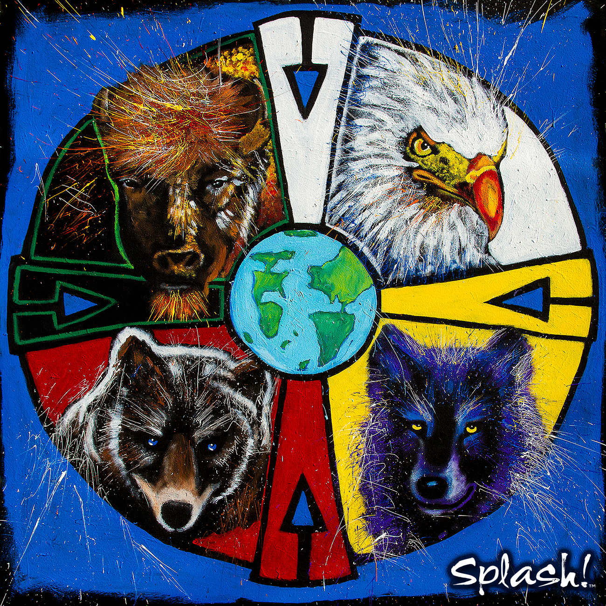

Investigate how historical globalization, imperialism, Eurocentrism, and cultural contact affected societies and how people respond to those legacies today.
I can...
explain how these lessons connect to To what extent should contemporary society respond to the legacies of historical globalization?
analyze sources for perspective, evidence, bias, and assumptions about globalization.
collect evidence from lessons and resources to support a defensible position.
refine my thinking into a clear Social Studies 10-1 position response.
How has historical globalization left legacies for people today?
In the last unit you explored the ways in which globalization affects your individual and collective identity. You know that each one of us has a unique identity based on experiences, beliefs, and values. When people have different backgrounds, they also have different world views. This means that they see the world in unique ways and have their own understandings about how the world should be and what their place is in that world. When people with different world views connect, there is always some kind of change.
What do the events of the past have to do with the world we live in today? The history of the world is the history of both cooperation and conflict, as people with different values, beliefs, and wants and needs struggled to achieve their goals. Differing world views often led to misunderstandings. Competing goals led to conflict. Sometimes their interactions had positive effects and sometimes they had negative effects. Some of these effects were both positive and negative. The long-term consequences of the actions of the past are called legacies. A legacy is something that has been handed down to us from the past.
As the people of the world become more and more connected, people are beginning to understand more and more about the legacies of the past. The legacies of globalization and imperialism have had a powerful effect on you, your family, and all development of Canada. What are these legacies?
In this unit you will look at the causes of historical globalization and imperialism, looking especially at the long-term impact on people today through a focus on the following issue question: How has historical globalization left legacies for people today?
Vocabulary
Below are the key vocabulary terms you will want to understand in this unit.
a) world view
b) imperialism
c) mercantilism
d) capitalism
e) grand exchange
f) industrial revolution
g) eurocentrism
h) residential school
i) Indian Act
j)protectionism
k) tariffs
l) monopoly
m) commodity
n) evolution
o) industrialization
p) urbanization
q) nationalism
r) satirical
s) genocide
t) consensus
u) treaties
v) colony
w) sovereign
x) assimilation
y) Non-governmental organization (NGO)
In Unit 1, you learned about the individual and collective identities of peoples around the world. You learned that there are many differences among the peoples of the world and that they express their identities in many different ways. A fundamental aspect of all cultures is that they all have their own world view, or way in which they see the world. A world view is like a lens through which a group sees the world—a view of the world and a view for the world.
Our world views are based on our experience with the world over time. Each one is different because all people come from different places, with different climates, geographies, and histories. Every world view answers the following questions:
Where did our world come from?
What is the nature of the world around us?
Where did human beings come from?
What is the purpose of human life?
How do we know what’s right and what’s wrong?
What happens when a person dies?
World views consist of an individuals beliefs about the world around them. A world view is the foundation on which a culture is formed. Indigenous world views have tended to be holistic in nature. The Sacred Circle by artist Bev Doolittle, is a pictorial representation of indigenous world views.
What thoughts come to mind when viewing this picture? European world views in the past have tended to be more linear, and secular.
Differing World Views
In Canada, political views find their origins in different cultural traditions each with particular value assumptions. The following descriptions are not intended to be statements of societal absolutes, but rather reflect a society's prevailing beliefs:
Indigenous World Views

Image taken from splash.cm
AN IMPORTANT NOTE: Throughout your past education, you may have heard the term "The Indigenous Perspective" to refer to the perspective taken by groups of Indigenous people in Canada on issues, historical events, etc. While this is often done with good intentions (providing a perspective not always acknowledged or respected throughout our history) it is flawed. There are hundreds of different tribes and bands throughout North America, each with their own customs, beliefs, and practices. Because of this, when reading about Indigenous perspectives it is important to remember there is no oneIndigenous perspective, just as there is no one European perspective, Asian perspective, African perspective, and so on. There may be common ground amongst certain groups, but their experiences are unique.
Traditional Indigenous societies within North America were founded upon an holistic and spiritually-based world view known as the "Sacred Circle".
Social organizations within Indigenous societies reflect a basic interrelatedness with each other.
Indigenous cultures developed political organizations based on equality and harmony. This did not mean that there was no conflict or war between nations, but rather that this was a tendency in their institutions.
Power, authority, and decision making were decentralized.
The natural autonomy of the individual and the sovereignty of the group were upheld as societal absolutes.
European World Views
Image taken from destination360.com
European societies tended towards a linear, analytical world view. Though many European societies have become more secular (not having to do with any religious faith) in recent years, during the time of contact with First Nations they were strongly religious and strongly evangelical (desiring to spread their beliefs to others).
Eurocentric cultures developed political organizations based on patriarchy and competition.
Power and decision making were centralized.
The rights and autonomy of the individual was deemed to be of paramount value.
Multiple Perspectives
Read the following fable from India. It shows what in the ancient Jain religion of India is called Anekantvad or “the manysidedness of things.”
The Elephant and the Blind Men
Once upon a time, a king called six blind men to see an elephant and describe it to him.
The first man touched the elephant's leg. "Hey, the elephant is a pillar."
"Oh no! It is a rope," said the second man, touching the tail.
"Oh no! It is a thick branch of a tree," said the third man, touching the trunk of the elephant.
"It is a big fan," said the fourth man, touching the ear of the elephant.
"It is a huge wall," said the fifth man, touching the side of the elephant.
"It is a solid pipe," said the sixth man, touching the tusk of the elephant.
They began to argue about the elephant, and each man insisted that he was right. Each man was observing part of the elephant from his own point of view without seeing the whole.
Each man was partly right because he had encountered a different part of the elephant. Each was partly wrong because he had not touched every part of the elephant. Their limited perspective or point of view prevented them from seeing the whole elephant. Had they taken the time to explore the whole elephant with their hands, they would have revised their perspectives. There is some kind of truth in what each person sees. Sometimes we can see that truth and sometimes only part of the truth because we may have different viewpoints.
Each of us sees things only from one perspective. Besides our actual abilities to use our senses and reasoning in order to see what is all around us, our perspectives are also based on our values and previous experiences. A person whose life goal is to make money may see everything in terms of gains and losses. A person devoted to their faith or religion may see everything as part of a blessed plan. A person who has grown up in a dangerous environment imagines threats everywhere.
Like our identities, our viewpoints are both individual and collective. Your point of view is yours alone—individual. It’s based on what you believe based on your own personal experience—what you have seen and heard and done as individual people. Your world view is collective. It comes from the assumptions and beliefs you have as part of a larger group, based on the experiences of the entire group. Your world view comes from your identity as a member of a religious, ethnic, or linguistic group and a member of a family. It also comes from your experiences and beliefs as a Canadian.
World Views and Understanding Today
What happens when people with different world views collide?
Throughout history, people with different perspectives have clashed over their lack of understanding. In the next few lessons you will look at what happened when people with differing world views came into contact as you explore early globalization, and later, imperialism. While a great deal of contact brought positive change, these historic confrontations created great problems for people and have left an unfortunate legacy for generations of people today. Yet these problems continue and world views still collide.
Today people try to understand one another in order to prevent conflict, but is there any way to prevent misunderstandings between people with different world views? Are there ways of learning lessons from the past?
Maps and Perspective
How do maps influence how we think about the world?
Our worldviews are influence by the things that we see and hear, often in very subtle ways. Even things in our environment that we might view as very minor can influence our thinking in profound ways! Consider maps of the world; world maps are attempts to show how the world looks, but can never be perfect representations. It would be impossible to show all of the details on earth, and even the very act of trying to turn a huge, three-dimensional object like the earth into a much smaller, flat image means that it has to be stretched or distorted.
Consider this video, which points out how distorted maps can be. When some countries appear so much bigger than they are in reality, while others appear much smaller, how might this influence the way someone sees the world? You may also want to visit the website talked about in the video, thetruesize.com and see how big or small things really are for yourself!
Reading
Please read Chapter 6, pages 116-121 in the Perspectives on Globalization textbook.
Lesson Summary
In this lesson you have looked at some different worldviews through geography, maps, and different ideas about humans and their role on Earth as compared to other living beings. You have seen that the European worldview, which is based on time and cause and effect, is very different from the Indigenous worldview that sees people, animals, plants, and the land as interconnected and all related. As you begin the next lesson on early contact between cultural groups, keep in mind that these people came from different backgrounds, with different beliefs and understandings about how people should live. These different perspectives contributed to the legacies of globalization that are still experienced in our world today.
Practice
Lesson questions
Use these questions to check your understanding while the lesson is fresh. Your responses save with the rest of your course notes.
Context
In this chapter, you will explore answers to the following questions: Why and how did globalization begin?
1
How did the foundations of historical globalization affect people?
Context
Why and how did globalization begin? How did the foundations of historical globalization affect people?
2
How did the consequences of historical globalization affect people?
Context
After you’ve read through Chapter 6, watch the following video called European Imperialism in Africa. Click on the blue link below! Once you’ve finished watching the video, answer the questions below:
3
What happened during colonial imperialism in Africa?
Context
What is the main difference between the 2 maps? What part did the Berlin Conference play in the creation MAP 2?
4
What happened to the native African political entities by 1914?
Context
Why was he named “Cowboy” and why “Smith”? Why did he add “X” to the end of his name,? What does the “X” mean, and why did he feel that it was important to make the name---change legal? Compare this to the naming of African slaves…..or to name---changes made to immigrants who entered the US via Ellis---Island.
5
Were you surprised to know that Cowboy plays golf, the “game of the oppressor”? Were you surprised to find out that Cowboy was an actual ‘cowboy’ at one point in his life?
Context
What does the “X” mean, and why did he feel that it was important to make the name---change legal? Compare this to the naming of African slaves…..or to name---changes made to immigrants who entered the US via Ellis---Island. Were you surprised to know that Cowboy plays golf, the “game of the oppressor”? Were you surprised to find out that Cowboy was an actual ‘cowboy’ at one point in his life?
6
Why were you surprised?
Context
Were you surprised to know that Cowboy plays golf, the “game of the oppressor”? Were you surprised to find out that Cowboy was an actual ‘cowboy’ at one point in his life? Why were you surprised?
7
Explain the “irony.”
Context
This geography is also deeply intertwined with First Nations spiritual beliefs and with their identity. What did you learn from the film about Blackfoot spiritual traditions? When one part of the system crashes, the other parts crash, as well.
8
Explain the phrase, “The trauma of the past crashes into the present”—What does this mean?
Saved locally
Evidence note
Capture one detail from this lesson that could help answer the issue question.
What is imperialism and how did it become a force that shaped our lives today? How does it differ from historical globalization? Imperialism refers to a relationship where one nation or group benefits from extending it's control over another. This can include control of land, political system, and economy. What do you think the word exploited means? Have you ever felt exploited?
Take a close look at the political cartoon, created in 1892. It gives a cartoonist’s impression of what was known as The Scramble for Africa in the late 1800s and early 1900s. The Scramble for Africa was a time in history when almost every European country fought to control and profit from the natural resources of Africa, including the use of human beings. This scramble led to a great deal of conflict, including war.
Let’s look more closely at the cartoon. It shows a white man, wearing big boots, a uniform, and a pith helmet, dominating the continent of Africa and controlling it with strings, like a puppet master. The man in question was Cecil Rhodes, a British-born South African who controlled diamonds and other mining resources in Africa. In this image he is showing a proposed telegraph line that would link up the countries of Africa.
Cecil Rhodes was an important man in the history of imperialism because not only did he believe in exploiting the resources of Africa, he also believed in Eurocentrism, the belief that the values, skills, and abilities of the people of Europe were superior to those of people from other parts of the world. In Rhodes’ case, he believed the British race was superior to all other races and should control the world.
I contend that we are the finest race in the world and that the more of the world we inhabit the better it is for the human race.
Cecil Rhodes
In the first unit, you looked at global interactions and their impact on your individual and collective identity. But why have these global interactions taken place? Why do people connect with others from around the world? Have those interactions always been connections between equals, or has one group of people tried to dominate or control another? How has historical globalization and imperialism led to the world we know today? You will explore why people have historically connected with those from other parts of the world. You will look at the early forces and effects of globalization and learn about imperialism, an important movement in history that has had serious effects on people all over the world.
Cultural Contact between Indigenous and Non-Indigenous Peoples
Map of New France, by Samuel de Champlain (1612)
Why did early globalization take place?
Throughout history, people have come into contact with people from other lands for many reasons. This cultural contact sometimes caused conflict, but it often helped people. People learned new and sometimes better ways of living. As ideas spread from one country to another, as people moved around, and as they traded goods, they began the process we call globalization. Globalization has been with us for a very long time!
An image of The Silk Road taken from newcastle.edu.au
The Silk Road was a trade route which connected many civilizations, from Africa, to Europe, to the Middle East, to India, to China. Not only did this allow the exchange of goods, but the exchange of ideas as well, which helped the societies involved. The spread of advanced ideas of science and medicine from the Middle East, for example, helped contribute to the Renaissance in Europe!
Watch:
Read and view this short slideshow video Expanding Western Worldview (pause to slow down) for examples of early contact between Europeans and other peoples. You can also access the PowerPoint slideshow here. (no sound)
Why did early globalization take place? Exploring the reasons why people made cultural contact in the past will help you understand the history of Canada and the world, and will show you how globalization has had a strong impact on our world today. What challenges and opportunities did early globalization create for Canadians and others? How did it create legacies for today’s people?
An understanding of early globalization will help you answer the issue question for Unit 2: How has historical globalization left legacies for people today?
Video - European Imperialism Review
Watch this 5-minute video reviewing European Imperialism and its causes:
How do we know what happened in the past?
In the previous lesson, you were asked to think about ways in which you could try to understand the world views of other people. Some ways we can try to understand the world views and perspectives of people from different parts of the world are through research, reading stories, and watching movies. But for the people of long ago, there are often no written accounts and certainly no movies. How can we explore the life of people in history? There are many primary sources that can help us understand the past.
Art, oral histories, photos, writings, and historical documents can provide us with a great deal of information about the people of the past. It’s important to remember that all of these primary sources were created from the perspective of their creator. Keep in mind the reasons why these records were created and the world view of the people who made them.
How can historical documents help us understand the past?
What do you know about the first Europeans to arrive in North America? What were their motives? What relationship developed between them and the people who lived here already? One way we can find out is by studying historical documents and images. Historical documents can take many forms. Since there were no cameras in the early days, diaries, letters, sketches, drawings, and works of art can provide a way to understand the past.
Historians study writing and artwork critically in order to understand the message. That is, they don’t take what they see or read at face value. They ask questions in order to put the document into a context. If you were going to critically analyze an image, what questions would you ask?
Begin by looking at two images of Christopher Columbus and his arrival in the Caribbean. What do these pictures tell you about early contact between Europeans and First Nations people?
After you have analyzed the image itself, you will need to complete some research in order to answer the questions that follow. Do an image search for “Columbus First Contact” using an Internet search engine, and see what you can find out.
This method of analyzing an image is known as the PAPER method.
Purpose: Why did the author/artist create this document?
Accuracy: Was it created at the time the event occurred or later? Was the author there when this event took place, or did he/she work from another text, or the imagination?
Perspective: What world view or perspective does the author have? How does that influence the message? What is your perspective? How might your own perspective influence your understanding of the event shown in the picture?
Errors and Omissions: What details can you find in the text that makes it convincing or unconvincing? Is anything missing from the text that might make it more believable?
Relate: Relate to other texts. How does it compare?
You might find the following passage from the diary of Columbus helpful in answering the Relate question. Compare the images with the diary below:
October 12, 1492: As I saw that they were very friendly to us, and perceived that they could be much more easily converted to our holy faith by gentle means than by force, I presented them with some red caps, and strings of beads to wear upon the neck, and many other trifles of small value, wherewith they were much delighted, and became wonderfully attached to us. Afterwards they came swimming to the boats, bringing parrots, balls of cotton thread, javelins, and many other things which they exchanged for articles we gave them, such as glass beads, and hawk's bells; which trade was carried on with the utmost good will.
But they seemed on the whole to me, to be a very poor people. They all go completely naked, even the women, though I saw but one girl. …
Weapons they have none, nor are acquainted with them, for I showed them swords which they grasped by the blades, and cut themselves through ignorance. They have no iron, their javelins being without it, and nothing more than sticks, though some have fish-bones or other things at the ends. They are all of a good size and stature, and handsomely formed. I saw some with scars of wounds upon their bodies, and demanded by signs the cause of them; they answered me in the same way, that there came people from the other islands in the neighborhood who endeavored to make prisoners of them, and they defended themselves. I thought then, and still believe, that these were from the continent.
It appears to me that the people are ingenious and would be good servants, and I am of opinion that they would very readily become Christians, as they appear to have no religion. They very quickly learn such words as are spoken to them. If it please our Lord, I intend at my return to carry home six of them to your Highnesses, that they may learn our language....
— Journals of Christopher Columbus
What did your research tell you about the motives for first contact between Europeans and American Indigenous people? Do either of these pictures accurately portray the motives of global contact or show the relationship between Columbus and the Indigenous people?
If using the PAPER method, the following information will help you find the answers to the five questions:
Prang
De Bry
This image, entitled Columbus Taking Possession of the New Country, was printed by the Prang Education Company in 1893—400 years after the event!
Prang was an American publishing company specializing in greeting cards and art education. At the time this image was created, many countries were taking over territory all over the world for money and power rather than for religious reasons. The Indigenous population in most of the Caribbean, thanks to Columbus and others like him, had been almost wiped out.
This image, entitled Christopher Columbus (1451-1506) receiving gifts from cacique, Guacanagari, in Hispaniola (Haiti) was composed by Theodore de Bry in 1594.
De Bry was an artist who worked for his father's publishing company in Germany. Driven out of his own country by the religious persecution of the controlling Spanish Catholics, he was hired to illustrate a series of books about the New World although he never visited it.
This image was illustrated in a book by Bartolome De Las Casas. He was a Spanish merchant who travelled to the New World with Columbus and helped him edit his diaries. He was so disgusted by the way the Spanish treated the Indigenous people that he became a priest and worked with the Indigenous people for decades. After many years in the Americas, he returned to Spain where he successfully lobbied the government for an end to slavery. He has been called the first activist of Indigenous human rights. His book, A Short Account of the Destruction of the Indies, is still in print.
Sample Answers - What your analysis should look like:
Prang
De Bry
Purpose
This image was probably used to illustrate a textbook or as a greeting card.
This image was illustrated in a book called A Short Account of the Destruction of the Indies that criticized Columbus and the actions of the Spanish.
Accuracy
This image does not seem accurate. There is a lot missing from this image, which was created in the United States 400 years after the event took place.
This picture seems very accurate. The Indigenous people seem afraid and are giving gifts to Columbus, which was true. A cross is being raised in the background, showing the presence of missionaries, which was true.
Perspective
This drawing is from an American perspective about what happened when Columbus arrived. At that time in history, the Americans were very proud of their nation. This is shown in the peacefulness and beauty of the picture. It doesn’t reflect either the Spanish or the First Nations perspective about what happened. As well, the Indigenous people at that time were not thought of as being equals, or having any real value, so that might be why they were left out.
My own perspective is that the Indigenous people were badly abused by the first Europeans, especially Columbus. It offends me that they aren’t shown in this picture. I really disagree with the view of the artist, so this influences what I see when I look at the picture.
This image is from the perspective of the Spanish, but it is also critical of their actions. It shows they knew what they were doing in trying to bring Christianity to the native people and trying to get natural resources from them. The artist’s background as a victim of religious persecution is seen in this image.
My own perspective is that the Europeans enslaved the Indigenous people, leading to their ruin. They also forced their religious beliefs on them, which I think was wrong. I more or less agree with the perspective of the artist, so I might not be open-minded when I look at the picture.
Errors and Omissions
There are no priests, missionaries, or Indigenous people in this picture even though they were an important part of this event.
There doesn’t seem to be anything missing from this image.
Relate
Compared to the primary source diary of Columbus, this image doesn’t really say anything accurate about the arrival of Columbus. It doesn’t show the religious overtones of his mission or the way the Indigenous people were enslaved and eventually died out.
When compared to the diary, it seems very accurate. It shows how the Indigenous people were afraid but also gave many gifts to the Spanish. The desire of the Spanish to convert the local people to Christianity is also shown as described in the diary.
Christopher Columbus - Should he be Honored?
In the United States, it is common to celebrate the day of his arrival in North America (October 12, 1492) as Columbus Day. Traditionally he has been credited with "discovering" the New World (North America). However, there are a number of issues which arise from this. The first is with the idea that someone could "discover" a land already inhabited by other people.
A cartoon which pokes fun at the idea of "discovering" an already inhabited land.
The second is that Columbus' treatment of Indigenous peoples was often brutal and inhumane. He would enslave many of the Taino people he first encountered, and would cut the hands off of the Taino who did not meet his demands for gold. As a result, a number of United States cities have stopped celebrating Columbus Day, and activists have continued to push for more cities to do the same.
What were the most important reasons for the people of the past to connect with others from different places?
Desire for a Better Life
Throughout history, people have always wanted to make a better life for themselves and their families. They immigrate to other countries for a better climate, a better government, and better jobs. Most of the people who came to Canada from other countries did so to make a better life for themselves and their families.
Trade is one important way people connect in order to make a better life for themselves. Since each part of the world only produces certain products, if people want to own them, they must get them from elsewhere. One of the earliest routes people travelled in order to buy and sell the goods and products they could not grow or make at home was the Silk Road. The Silk Road was an overland travel route from China across Asia and into Europe. While silk was one important commodity that was carried over the Silk Road, many other goods were bought and sold. The map below shows some examples.
As trade along this route flourished, so did contact among people who spoke different languages and held different religious beliefs and world views.
Watch the following video:
Political and Economic Power
The leaders of many countries increase their economic and political power around the world through global contacts. Individuals, governments, and companies want to make profits by obtaining resources and labour as cheaply as possible. This means trade—and it sometimes means the exploitation of the poor and weak by the rich and powerful.
Alexander the Great (356–323 BCE) was a military leader who took control of the lands from Greece to India. In the 1100s Genghis Khan created a nation out of many different groups of nomadic peoples and then created a powerful empire from the coast of China to the Aral Sea in central Asia. His descendants further increased his empire all the way to the Volga River in Russia.
Alexander the Great and Genghis Khan were some of the first true empire builders—people who used global contact to create an empire, or a group of peoples and/or their nations and resources controlled by a leader or government with supreme power.
Adventure and Curiosity
Not all who travel from place to place are trying to get richer or more powerful. Marco Polo (1254–1324) is perhaps one of the best-known adventurers of all time. As a teenager, Marco Polo travelled along the Silk Road from Italy to China where he learned about fireworks, pasta, paper money, a postal system, industrial coal production, and central government. His journeys lasted for twenty-four years! His journeys helped share ideas and technology across Europe and Asia.
When he came back to Italy, he wrote a very popular book about his adventures that is still in print today. Although his book was questioned at the time and was often called TheMillion Lies, his book is one of the earliest European primary source documents that tells us about life in Asia at that time in history.
I believe it was God's will that we should come back, so that men might know the things that are in the world, since, as we have said in the first chapter of this book, no other man, Christian or Saracen, Mongol or pagan, has explored so much of the world as Messer Marco, son of Messer Niccolo Polo, great and noble citizen of the city of Venice.
—Marco Polo, from The Travels of Marco Polo
Some of the earliest Canadian explorers were also looking for fun and excitement when they explored Canada.
Belief in Religious or Social Superiority
Remember what you read about world views in the previous lesson? People with strong world views can have powerful beliefs that influence their behaviour. Sometimes people think their political, religious, or scientific beliefs are better than those of anyone else. These strong beliefs often make people try to convince others to live the same way. They want others to experience the meaning or the better life that is the result of their beliefs. Early Buddhists travelled along the Silk Road to share their religious views. Shortly after the Buddhists began their explorations, both Christians and Muslims began to travel to spread their faiths. Some of these cultural contacts led to conflict when groups disagreed about their important values and beliefs. Religious differences still lead to global conflicts today.
Religion was also an important motive for Europeans when they first arrived in Canada. Jesuit (Roman Catholic) priests were among the first Europeans to arrive in Canada. Members of other Christian groups also came to Canada. Their interactions with indigenous people had a strong impact on the relationship between Europeans and First Nations people.
Today whole nations rationalize going into other countries based on their belief in the superiority of democracy, “freedom” or capitalism.
Early Contact in Canada
The Beothuk
How did early global contact affect the development of Canada? Your predictions chart about early cultural contact in Canada showed some of the results of the interactions between First Nations people and the first Europeans to arrive. Canada is sometimes called a nation of immigrants because so many Canadians came here from other countries. The early explorers, missionaries, pioneers, settlers, and traders came to Canada for all the same reasons as those who came into contact along the Silk Road, and all through Europe, Asia, and Africa. They developed many different types of relationships with First Nations and Inuit people based on their different world views and the differing reasons for their contact.
The extinction of the Beothuk of the island Newfoundland was one of the earliest and most tragic legacies of early Canadian globalization. European fishers and trappers began to settle in the island of Newfoundland. Their main goal at first was simply to have a better life. They saw a great deal of fish and animals that could be trapped for their furs. These goods were worth money back in Europe where they were shipped and sold. Later, the Europeans tried to gain economic and political control of Newfoundland by controlling all the land and resources.
The Indigenous Beothuk avoided contact with the Europeans. As the Europeans used up many of their food products by fishing, hunting, and trapping, the Beothuk were forced inland. They did, however, borrow their technology by coming into the deserted camps of European fishers where they found abandoned pieces of metal such as old spoons and knives. They reworked the metal to create their own traditional hunting tools including arrowheads and harpoons. They also took traps and reused the metal for spears, which enraged the Europeans who retaliated by attacking and killing the Beothuk.
The Hunters of the Plains
First Nations people of the Plains, such as the Kainai, Piikani, Siksika, and Nehiyawak, depended on the buffalo for their survival. When the first few Europeans arrived, the people of the Plains exchanged furs for pots and pans and other manufactured items they couldn’t make themselves. They shared their knowledge of hunting and survival to help the Europeans adjust to Canadian seasons. As more and more European settlers travelled to Western Canada and began to ranch and farm on the Plains, the way of life of the Aboriginal people vanished.
Do These Motives Still Exist Today?
You have looked at the following motives that people in the past had for cultural contact:
desire to lead a better life
political and economic power
curiosity and adventure
belief in religious or social superiority
Do you think these motives still exist today? When people make global contacts, are they still looking for these same things or are they interested in something else? Do similar results occur? If one group with more powerful technology and a controlling world view interacts with another, does it tend to take over?
Enrichment
You may find the movie Dances With Wolves interesting in relation to this topic. Note: Please be sure the movie ratings accommodate your age and situation.
Watch the excerpt: Nothing To Celebrate which features George Erasmus as he reflects on the impact of cultural contact on First Nations as Canada approached its 125th year of Confederation.
Vocabulary
commodity: a valued or useful item that is bought and sold
Lesson Summary
In this lesson you have looked at some different reasons why early cultural contact occurred around the world and in North America. There are four main motives:
desire to lead a better life
political and economic power
curiosity and adventure
belief in religious or social superiority
You have learned how different motives for globalization led to different relationships between people as well as different results for the environment. These actions have had long-term consequences for today’s people. You have also looked at historical documents and how historians analyze them to determine their accuracy and perspective.
Use these podcasts before the lesson questions. Listen for details that help answer the related issue question: To what extent should contemporary society respond to the legacies of historical globalization?
Brutal Trade-off that Built the Modern World Podcast
Podcast companion for Brutal Trade-off that Built the Modern World. Use it to connect media evidence back to To what extent should contemporary society respond to the legacies of historical globalization?
Invisible Lens: the Pyramid, the web and the legacy of colonization podcast
Podcast companion for Invisible Lens: the Pyramid, the web and the legacy of colonization. Use it to connect media evidence back to To what extent should contemporary society respond to the legacies of historical globalization?
Use these questions to check your understanding while the lesson is fresh. Your responses save with the rest of your course notes.
Context
What are the consequences of historical globalization (imperialism) on Aboriginal societies? (2.1) How can we exhibit a global consciousness with respect to the human condition? (2.2) What are our social responsibilities as global citizens? (2.3)
1
What are the impacts of Eurocentrism?
2
Watch the video: Silk Road
Context
Slavery continued in some parts of the world until well into the Slavery was less common in northern parts of a continent, where the climate would not allow. Maintaining large numbers of slaves over long, cold northern winters was not
3
List some examples from the textbook of the products exchanged through the Grand/Columbus Exchange.
Context
changes. The era when industry became mechanized has become known as the What does IMPERIALISM mean?
4
How does it relate to or contribute to globalization?
5
Watch the following video and then complete the assignment questions. Clink the blue link below!
Context
What is Imperialism? Watch the following video and then complete the assignment questions. Clink the blue link below! Directions: After you’ve watched the video “Imperialism: Crash Course World History,” answer the following questions.
6
What foreign nations colonized?
Context
What are some legacies of historical globalization? How has cultural contact affected people?
7
How has the exchange of goods and technologies affected people?
Context
How has cultural contact affected people? How has the exchange of goods and technologies affected people?
8
How are the legacies of historical globalization continuing to affect people?
Saved locally
Evidence note
Capture one detail from this lesson that could help answer the issue question.
Take a close look at the details from the advertisement for Pears' Soap from the late 1800s. In the centre of the image, American naval hero George Dewey is washing his hands. Dewey was famous in the United States for his part in winning an important battle in the Philippines, miles away from the United States.
Look at the words in the ad: The first step towards lightening The White Man’s Burden is through teaching the virtues of cleanliness.
Now look at the small sketches around Admiral Dewey—American ships delivering crates of soap in an exotic port, and a white man giving an Indigenous person a bar of soap. What does this image tell you about the attitude held by many Europeans, and North Americans, towards people in other nations?
The phrase The White Man’s Burden comes from a poem written at the time of the Spanish–American War in the Philippines. Think about that for a moment.
The poem “The White Man’s Burden” was subtitled “The United States and the Philippine Islands.” The poem was written in response to the United States conquest of the Philippines and other former Spanish colonies. It shows the attitude of many people during imperialist times.
Excerpt from The White Man's Burden
Take up the White Man's burden—
Send forth the best ye breed—
Go, bind your sons to exile
To serve your captives' need;
To wait, in heavy harness,
On fluttered folk and wild—
Your new-caught sullen peoples,
Half devil and half child.
“The best ye breed” and “your sons” refer to the idea that the very best men of the younger generation should be sent away to serve the people of the less-developed world. "Fluttered folk and wild—Your new-caught sullen peoples Half devil and half child” reveal Kipling’s belief that the people of these colonies are wild, evil, and immature.
Take up the White Man's burden—
In patience to abide,
To veil the threat of terror
And check the show of pride;
By open speech and simple,
An hundred times made plain,
To seek another's profit
And work another's gain.
In the second stanza, Kipling suggests that the White Man is involved in action in other countries only in order to help the people who live there.
Take up the White Man's burden—
The savage wars of peace—
Fill full the mouth of Famine,
And bid the sickness cease;
And when your goal is nearest
(The end for others sought)
Watch sloth and heathen folly
Bring all your hope to nought.
In the third stanza, Kipling suggests that "the savage wars of peace” are being fought for the sake of others, not to benefit the White Man. He also states that the laziness and sinful mistakes of the people from these other countries will destroy all the efforts of the White Man to help end hunger and sickness.
Rudyard Kipling, first published in McLure's Magazine, February 12, 1899.
When you look closely at the poem, you will see that Kipling felt Europeans and their descendants felt obligated to both enslave and to save those in other nations. He was also angry that the Indigenous people didn’t appreciate their efforts. His colourful opinions about Indigenous people represented the generally held opinions of many "white people" at that time.
Why do you think Kipling called his poem “The White Man’s Burden”? Remember, at this time in history, women in most of Europe and North America did not even have the right to vote!
People who study history look at the context behind historical documents. An understanding of Kipling’s personal history helps explain his attitudes. Although Kipling’s parents were British, he was born and grew up in India where his father was principal of a school. His parents were part of an upper class who had little to do with the people of India, although they were in India to serve the people. As a very young child, he was raised by an Indian nanny and spoke Hindu. At the age of six, he was sent off to boarding school in England. He later worked in Pakistan, travelled through Japan, holidayed in South Africa, and worked in both England and the United States.
Kipling’s ideas are a form of ethnocentrism. Ethnocentrism is the concept that the ideas, values, and way of life of one’s own cultural group are superior to those of others. Kipling’s particular brand of ethnocentrism is called Eurocentrism, the belief that people of European descent are superior to people of any other culture. It was often coupled with a sense of responsibility to people who were considered less advanced and in need of help to make their lives better. During imperialist times, most people in Europe thought of themselves as more civilized than people in other parts of the world. Many Europeans thought other cultures were primitive or less-developed than they actually were. They did not understand the political and economic systems, values, languages, and traditions of other nations. Indigenous people from colonized countries were frequently called savages—not necessarily with the idea that these people had less value as human beings, but that their societies were less advanced. Many European people felt they had a duty to help “civilize” these people by teaching them to live a European lifestyle with European values and behaviour.
Christianity was a powerful force behind imperialism. Most people in Europe were Christian at this time, and they believed that their duty was to spread the word of God. As areas such as Africa and the Americas opened up to greater trade and immigration, many Christians sincerely believed it was their duty to spread Christianity to the people. They believed they should provide food, education, and medical care to people in other nations, while at the same time saving the souls of the non-Christians. Unlike those who travelled for personal gain, Christian missionaries also took with them medicine, education, and technology to improve the lives of others. In their attempts to convert others to their beliefs, many suffered extreme hardships and even death.
The Idea of Social Darwinism Led to Imperialism
Charles Darwin's theory of evolution was becoming popular in Europe. Darwin was a British scientist who wrote a book called The Origin of the Species. In his book he proposed that plants and animals naturally changed over time to adapt themselves to their environment. This process of natural selection resulted in the survival of the species best suited to its environment. The idea was survival of the fittest, whereby every species changed or evolved to become better able to survive.
The idea of Social Darwinism was that, similar to nature, different racial groups were stronger and better able to survive and they will naturally overpower races that are less able to survive. By extension, strong nations would conquer weaker ones. This theory also suggests that cultures evolve to survive. Therefore, the duty of stronger nations, such as those in Europe, is to take over weaker nations in the Americas, Africa, and Asia to improve their cultures. Furthermore, these same European countries had a responsibility to govern and control these nations until they were able to take care of themselves.
Vocabulary
ethnocentrism: the practice of measuring other cultures by how well they compare to your own
evolution: a slow, gradual process of continuous growth and transformation into a more complex or better form
Social Darwinism: the theory inspired by Charles Darwin which suggests that more powerful or dominant people, cultures, or nations have an inherent right to dominate weaker people, cultures, or nations
Use these questions to check your understanding while the lesson is fresh. Your responses save with the rest of your course notes.
1
What percentage of Africa was colonized by 1913?
Context
What percentage of Africa was colonized by 1913? 2. According to the graph, Which 2 European countries held the most territory in Africa? (did you get the same answer as #4 in the Map Comparison above?)
2
What percentage Africa was controlled by the rest of the countries (excluding the 2 countries mentioned in #2)?
Saved locally
Evidence note
Capture one detail from this lesson that could help answer the issue question.
Perspectives on Historical Globalization and Imperialism
What economic, social, and political ideas contributed to the rise of imperialism? Do the strong always want to control the weak? If a strong person and a weak person get together, do you think it’s natural for the stronger person to control the weaker person? If a rich person meets a poor person, does the rich person usually try to take the poor person’s money and possessions? When one person meets another, is it common for each to try and force the other to take on the same religious, economic, and political views? In this lesson we will look at history and investigate why the richer and more powerful nations of the world did all those things when they practised imperialism.
What happened in history that led to imperialism? In the previous lesson you looked at early global contact between the people of different nations. Early global contact took place for many reasons and took many forms. However, by the late 1800s, when the Rhodes Colossus cartoon was created, there was intense imperialism all around the world. Canada as we know it was created by the forces of imperialism. England and France created large empires in which they controlled territories around the globe. Canada was a colony of both France and England during the days of imperialism. Imperialism takes place when the government of one country decides to control another through economic, political, and/or military force.
France and England were not the only nations to control territories in other parts of the world. Germany had colonies in Africa; Spain and Portugal had colonies in South America; The Netherlands had colonies in Africa and the islands now known as Indonesia; the United States practised its own form of imperialism in the Philippines, the Caribbean, and Central America; and Japan was also a world power because of imperialism. Today we may still see the effects of imperialism around us. In this lesson you will explore the following question: What economic, social, and political ideas contributed to the rise of imperialism?
How did industrialization and capitalism contribute to imperialism?
The Age of Exploration
During the 1400s, there were rapid advances in transportation technology. New ships were safer, stronger, and easier to navigate, and they could travel for long distances. These improvements in transportation allowed the people of Europe to reach lands they did not know existed. This contact led to increased trade and migration. Sometimes this is called the Age of Discovery because many of the peoples of the world met for the first time.
The Industrial Revolution
In the days of early globalization, most of the products people used were grown or created on the farms or in the small villages where they lived. While people travelled and sometimes moved in order to buy and sell the goods they could not get at home, this was fairly limited until the Industrial Revolution. The Industrial Revolution was a period in history when the rapid growth of new ideas and technology led to important changes in society. Before the Industrial Revolution, most people were farmers or fishers. As technology improved, more and more people began to make a living through industrial manufacturing and trade.
The Industrial Revolution began in Great Britain and expanded to other countries, including Canada. This growth of industrialization is called a revolution because it was a sudden and important change in how people lived.
The Industrial Revolution led to other changes in society. One of the main changes was urbanization, which takes place when people move from rural areas to cities. People moved from their farms and small villages to large cities where there was factory work. In the early stages of the Industrial Revolution, many of these people lived in crowded, unclean, and unhealthy living spaces where there was a lot of disease and crime.
Industrialization and urbanization at first caused many hardships for people.
Children began to work in factories and other dangerous jobs for very low pay.
Working conditions for all people were unregulated and often unsafe with long hours and little pay.
Women started to work outside the home, leaving small children uncared for.
Urbanization led to crowded and unhealthy living conditions.
With time, these working and living conditions improved.
People began to earn more money and have a higher standard of living.
People began to live longer, fewer babies died, and people were healthier overall.
Because people were becoming richer and lived and worked closer together, they started to demand equal treatment under the law. This led to better working conditions.
Eventually, industrialization, along with new ideas about human rights and how society should operate, led to democracy in Europe and the New World.
Many nations that are industrializing today are experiencing the same changes to their societies that took place during Britain’s Industrial Revolution.
Imperialism and the Industrial Revolution
One piece of technology that was invented during the Industrial Revolution was the cotton jenny, a machine that makes cotton cloth. The cotton jenny could produce a lot more cloth than the previous system in which people made cloth with a spinning wheel and a hand loom. This led to two problems. Where were the factories going to get all the raw cotton fibre to make the cloth? What were they going to do with all that cotton cloth?
By controlling the countries, such as India, where cotton could be grown, the factory owners had a ready supply of cotton. By controlling the economies of countries where people wanted to buy cotton, these companies had a market for their goods. The Industrial Revolution also led to huge improvements in the technology of transportation. Railway lines, canals, and ocean-going ships could transport large quantities of natural resources and manufactured goods quickly and inexpensively. If a European country had colonies in other countries where raw materials could be found, and there were people to buy their finished goods, they could make more money. The Industrial Revolution encouraged European governments to expand their empires.
Video - Imperialism and Industrial Revolution
This 10-minute video may enhance your understanding of the relationship between the Industrial Revolution, Capitalism and Imperialism:
From Mercantilism to Capitalism
If you were a country, what would you do to try to make as much money for your people as possible? Would you try to sell as much as you could to other countries without buying their products? That’s what happened during the Industrial Revolution. Once countries started manufacturing a lot of goods, they produced more than they could sell within their own countries. They needed a market for their goods in other countries. They also needed raw materials to create these products. People in European nations tried to increase their wealth by bringing in natural resources from other countries, using those resources to create manufactured goods, and selling the finished goods to people in their own countries and abroad.
However, simply buying the raw materials and selling the finished products didn’t create the kind of profit these early industrialists wanted. These businesspeople and their governments could see there was a lot of profit to be made by global trade. They wanted strong control over the buying and selling of goods within their own countries. They developed a system called mercantilism. Mercantilism is a way for countries to get richer by controlling the buying and selling of goods, or trade. Mercantilism includes establishing colonies and developing industries. It also involves protectionist policies that are designed to make money for the country. These involve encouraging the country to sell more goods than it buys by putting tariffs on goods that are brought in from other countries. In some cases, governments only granted business licences to certain companies, giving them a monopoly or sole control over a certain industry. Through mercantilism, European countries hoped to keep as much wealth as possible in their own countries for their own people.
Mercantilism seemed like a great policy for awhile. Countries with a lot of colonies, such as Great Britain, brought in fish, minerals, cotton, lumber, and other raw materials from their colonies in North America, Asia, and elsewhere. They then manufactured products and sold them back to the people in the colonies and in other countries. However, if a country that wasn’t a colony tried to sell its goods in England, they were charged an extra fee or tariff. This encouraged the British people to buy their own goods and by doing so, protect their own industries. As these early industrialists became wealthier, they reinvested their money into the economy, leading to greater and greater wealth for themselves and their families. However, people (especially those in the colonies) and businesses didn’t like paying taxes on imported goods. Many of them believed more money could be made if there were fewer controls on the economy.
Video - Mercantilism Explained
Watch this brief description of mercantilism:
Adam Smith, Father of Capitalism
Adam Smith was a British economist who thought that mercantilism was not the best system. In his book The Wealth of Nations, Smith explained his idea that if people around the world competed for business and worked to make themselves rich, everyone would benefit. Smith thought governments should not try to regulate business. He thought that if the economy was able to function freely, with few controls, everyone would be free to make more money. This theory is sometimes called the invisible hand because the economy works invisibly to create a profit for everyone. This freedom to trade without restrictions from the government gradually became the system we know today as capitalism. It was very different from mercantilism because it allowed the economies of all countries to operate without the government controls imposed by a mercantile economy.
Capitalism is the dominant economic system in our world today. Most people in today’s world value wealth and the freedom to make a profit through legal means. Capitalism encourages the buying and selling of goods and services between nations. Capitalism was a huge force in the development of imperialism. It continues to be one of the most important forces in our globalizing world today.
Video - Capitalism
Watch this brief video summarizing capitalism and its origin:
Does Capitalism Benefit Everyone?
While the economic system of capitalism gained popularity during the Industrial Revolution, there are many perspectives on how much it benefitted the average person. Take a look at the image. It was published in a workers’ magazine. From the view of this artist, what opinion do average working people have about capitalism? Who benefits? Who does all the work? Who suffers? The views expressed in this image illustrate some common concerns with capitalism:
Some people benefit more than others.
Those who start out with money tend to get richer, while the poor don’t have the same advantages.
The rich are supported by the majority of people who do most of the work.
Empire Building
One important job of the government of any country is to create a better life for its people. In the ancient past, one way leaders tried to create more wealth and power for themselves and their nations was through building up their own empires. There have been dozens of important empires throughout history, including the Greek Empire, the Arab Empire, the Ottoman Empire, the Persian Empire, the Inca Empire, the Aztec Empire, and the Mongol Empire. Empires are created when powerful countries use their armies to control people in other countries.
As countries became richer, more powerful, and more connected through industrialization, mercantilism and capitalism, they became more competitive for wealth and power. Many nations in Europe fought to gain more territory. The newly acquired territories of North America, South America, Australia, and New Zealand were the first to become colonies of European countries. A colony is a territory claimed and ruled by another country. The colonies of the New World were settler colonies; that is, they became home for many English, French, Spanish, and other Europeans who moved there in search of adventure and wealth. European nations also established colonies in Asia and Africa, where they sent settlers and obtained resources. These colonies are known as mercantile colonies.
The people of Europe began to develop feelings of nationalism at that time in history. In other words, they began to develop a sense of belonging and a feeling of pride in their country. This pride led them to become richer and more powerful by spreading their influence to other places and establishing colonies.
England and France had colonies around the world. During the height of its imperialist power, Britain was called “The Empire on which the sun never sets.” Can you think why it was called that?
capitalism: an economic system characterized by private or corporate ownership of property, which focuses on the accumulation of wealth and competition in a free market
democracy: the power to govern rests with the people through majority rule and respect for minority rights
imperialism: when a nation extends political, economic, or military control over another nation or territory
colony: a territory claimed and ruled by another country
Industrial Revolution: the rapid change from a farming economy to a manufacturing economy. The Industrial Revolution began in Great Britain in the 1700s and spread to other countries, including Canada.
industrialization: the shift of a country’s economic system from agriculture to manufacturing
nationalism: loyalty or devotion to the nation
urbanization: the change in a country or region when much of its population moves from the country to cities
protectionist: when a country puts duties or quotas on imported goods in order to protect its own industries from outside competition
tariff: a government tax on imported or exported goods
monopoly: a market dominated by a single seller with no competition
Use this podcast before the lesson questions. Listen for details that help answer the related issue question: To what extent should contemporary society respond to the legacies of historical globalization?
Unbroken chain of global trade podcast
Podcast companion for Unbroken chain of global trade. Use it to connect media evidence back to To what extent should contemporary society respond to the legacies of historical globalization?
Use these questions to check your understanding while the lesson is fresh. Your responses save with the rest of your course notes.
Context
were stepping forward to meet this demand by developing machines that could produce goods more than ever before. This process started in Britain when the 28. Until then, most manufacturing took place in people’s homes. In the textile industry, for example, spinners would work at home to make thread from raw wool or cotton.
1
What is this old industry called?
Context
What is this old industry called? 29. As factories were built, cheap machine-made products gradually replaced hand-crafted goods—and traditional craftspeople were driven out of work. This new way of working—in factories—sparked dramatic changes. The era when industry became mechanized has become known as the
2
What does IMPERIALISM mean?
Context
Directions: After you’ve watched the video “Imperialism: Crash Course World History,” answer the following questions. What foreign nations colonized?
3
How did the natives respond to the foreign presence?
Context
9. Throughout the episode, we see segments of a workshop presented by John Lagimodiere, owner of Aboriginal Consulting Services. What is his approach in his workshops? Initially, what are the reactions from participants? By the end of the workshop, how have their reactions changed?
4
Discuss the differences between the experiences of Native Americans in the United States during colonization and the experiences of Aboriginal people in Canada during the same time period.
Saved locally
Evidence note
Capture one detail from this lesson that could help answer the issue question.
Although Kipling’s poem represented the Eurocentric views of many people when it was written, not everyone agreed with it. In fact, it caused a huge stir in the press, with dozens of articles, poems, and cartoons created in response. Consider some examples.
“The White (?) Man’s Burden,” by cartoonist William Walker (image below, is a satirical look at imperialism. Examine the details in this cartoon. What nations do the four riders represent? Who is really carrying the burden?
The following editorial was published in Literary Digest on May 6, 1899. Note: The notion of race characterized by classification of populations on the basis of skin colour and observable physical characteristics was common in the seventeenth and eighteenth centuries.
The underlying sentiment of the poem, as its title suggests, is a rank falsehood, the white man's burden being the voluntary and violent assumption of sovereignty over black and yellow races.... Mr. Kipling and the white race everywhere think it a sacred duty to shoot thousands of savages, as the British troops did recently in the advance on Omdurman, and as we have just done in Manila, and to reduce the natives to slavery and to steal their land, "all in the name of God and civilization!"
Has the British slaughter of the East Indians and the virtual enslavement of 300,000,000 of them, as well as of the Australians, been of any service to those people? Has not the whole burden been upon the conquered people? Have the Indian races of North, South, and Central America and the Polynesian races of the Pacific archipelagoes been benefitted by contact with the white man? Not a bit of it. They have not only been robbed of their lands and liberty, but the contact is slowly working complete extermination of them. Take the continent of Africa, which has been entirely delimitated and reapportioned among European conquerors, is the burden upon the despoiled black hordes or upon the white conquerors?
Nobody has asked the white races to rob and enslave the black and yellow races of the earth. T. Thomas Fortune, “The White Man’s Burden,” New York Age, April 1899.
Internet
Use a search engine to examine some of the critical responses to Kipling’s poem “The White Man’s Burden” and the Spanish–American war in the Philippines. Search for the following:
“The Brown Man’s Burden,” by Henry Labouchère (1899)
“The Black Man’s Burden,” by H.T. Johnson (1899)
“The Poor Man’s Burden,” by George McNeil (1899)
“Home Burdens of Uncle Sam,” by Anna Comfort (1899)
“What Is the White Man’s Burden,” by David Greene Haskins, Jr. (1900)
“To a Person Sitting in Darkness,” by Mark Twain (1901)
“The Real White Man’s Burden,” by Ernest Crosby (1903)
Do ethnocentrism and Eurocentrism still exist?
In the previous part of this lesson, you looked at the impact of Eurocentrism on imperialism. Europeans and their descendants are not the only people who have historically believed their race was superior to others. Many people and governments have believed that their own race and culture was better than others and used that belief to justify their imperialist actions. Here are two examples:
China and the Mandate of Heaven: The Chinese believed in something called The Mandate of Heaven—the concept that Heaven blesses a just Chinese ruler and gives him power over all under Heaven. This belief was historically used by the Chinese to defend taking territory in areas surrounding China.
The Empire of Japan: At the height of its power at the end of World War II, Japan controlled territories in northeast China, Korea, islands in the Pacific, and parts of Russia. It was truly a world power.
The United States of America: A belief held by some Americans in the country's early years was known as Manifest Destiny; the belief that the North American continent rightfully belonged to the United States, and this drove their expansion westward and into territories controlled by other countries, such as California.
The idea of superiority based on race or ethnicity has been used by groups all over the world in the past and continues to be used today. Ethnocentrism has been behind injustice, war, and genocide or the mass killing of ethnic, racial, or religious groups around the world. Ethnocentrism has led to misunderstanding and conflict on every continent in the world, from the mass killing of people in Africa to the persecution of religious groups in China. The belief in ethnocentrism is still used by people and governments to control people today.
Is Imperialism Still With Us Today?
Can you think of any modern-day examples of the following?
a powerful country defends its invasion of another by saying it is making the world safe for democracy
a corporation threatens to pull jobs out of a less-developed country when people insist on higher pay or better working conditions
a powerful country encourages other nations to use capitalism—or communism—as an economic system
a world map has Europe or North America in the middle
Canadian students read only short stories and novels written in Canada, the United States, or England
a world history course focuses on the history of Europe
local churches go to less-developed countries to spread their religious message
You have looked at some historical examples of imperialism and the changes to society that led to its growth. Was imperialism just something that happened in the past, or is it still with us today? Remember that imperialism takes place when one country has a policy of controlling another country politically, economically, or through armed force.
Vocabulary
satirical: to criticize by using wit, irony, sarcasm, and ridicule
genocide: the deliberate destruction or elimination of a racial, political, religious, or cultural group
Lesson Summary
In this lesson you looked at a number of movements that took place that led to empire building around the world. These movements were based on new ideas, more powerful governments, technology, and greater organization within society. They include the following:
industrialization
the rise of capitalism
the growth of nationalism
Eurocentrism and ethnocentrism
The desire to make a profit, coupled with industrial technology and a belief in ethnic superiority, led to imperialism. Imperialism had a strong impact on people around the world, both positive and negative. It influenced the course of history, led to racism and armed conflict, and even contributed to world wars. Imperialism in some forms still exists in our world today. Globalization and imperialism are closely linked because they both involve interaction between the nations and peoples of the world.
Use these questions to check your understanding while the lesson is fresh. Your responses save with the rest of your course notes.
Context
2. According to the graph, Which 2 European countries held the most territory in Africa? (did you get the same answer as #4 in the Map Comparison above?) What percentage Africa was controlled by the rest of the countries (excluding the 2 countries mentioned in #2)?
1
Think about it: Would the information in MAP 2 and the pie chart above be the same if there had never been a Berlin Conference?
Context
What percentage Africa was controlled by the rest of the countries (excluding the 2 countries mentioned in #2)? Think about it: Would the information in MAP 2 and the pie chart above be the same if there had never been a Berlin Conference?
2
Compare MAP 2-- PARTITION OF AFRICA with the map of Africa from 1997 below
Context
Think about it: Would the information in MAP 2 and the pie chart above be the same if there had never been a Berlin Conference? Compare MAP 2-- PARTITION OF AFRICA with the map of Africa from 1997 below
3
How did the Scramble for Africa in the 1800's and 1900's affect the current borders of Africa?
4
What was the role of the Indian Agent?
5
Why did he add “X” to the end of his name,?
Context
How are our ideas about other cultural groups shaped? How did Hollywood shape and reinforce the stereotypical image of the North American Indians? Beyond Hollywood, in what other ways have the stereotypical images and ideas about Native Americans been perpetuated?
6
Why would one culture do this to another culture?
Context
How did Hollywood shape and reinforce the stereotypical image of the North American Indians? Beyond Hollywood, in what other ways have the stereotypical images and ideas about Native Americans been perpetuated? Why would one culture do this to another culture?
7
Where else is this happening in the world today?
Context
When one part of the system crashes, the other parts crash, as well. Explain the phrase, “The trauma of the past crashes into the present”—What does this mean?
8
What aspects of the present culture have been affected by events of the past?
Saved locally
Evidence note
Capture one detail from this lesson that could help answer the issue question.
In today’s world, it would be hard to find a person who has not been affected in some way by globalization and imperialism. People from many different cultures come into contact every day. People who speak different languages and have many different beliefs, values, and world views live side by side. However, that has not always been the case.
When the first Europeans arrived on the shores of what we now call Canada, they had never seen Aboriginal people. Aboriginal people had never seen Europeans. Early contact had a strong impact on the people themselves, but perhaps even more importantly, the results of this early contact had far-reaching effects on the people of today. Consider the nature of this cultural contact. Was it a meeting in which each group wanted to learn from and benefit from the other? Or was it an unequal meeting, where one group of people wanted something from the other? Did one group plan to get rich by dominating and controlling the other? How did the nature of that conflict lead to the development of today’s Canada?
Canada was a multicultural country long before the arrival of the first Europeans. The First Nations and Inuit of Canada belonged to many different cultural groups that operated like countries. That is why the Indigenous people of Canada are called First Nations. These Indigenous nations had different languages, values, beliefs, and customs. They had their own leaders and systems of government. They traded, intermarried, travelled back and forth, fought, and made agreements with each other just like nations today. The reasons for their contact affected the kind of relationship that developed between them. When nations wanted the same land or resources, there was conflict. When nations wanted to exchange goods or people, there was cooperation.
When the first Europeans arrived, they had many different reasons for making contact. Some were explorers looking first for India and later for a passage through North America to the Far East. Some were adventurers looking for excitement. Many were traders and entrepreneurs looking for goods to buy and sell. Later settlers arrived, looking for a better life, and missionaries wanting to share their beliefs. All of these newcomers had one thing in common: in one way or another, they were supported by the governments of foreign countries who wanted to benefit from their relationship.
The Vikings
The first Europeans to arrive in Canada were the Vikings who founded a short-lived outpost in Newfoundland at L'Anse Aux Meadows in about 1000 BCE.
The French
The French claimed the area now called Québec for France. It was explored by government representatives looking for land to claim and traders in search of fish and furs, and settled by immigrant farmers. The First Nations people of this region helped the French by giving them food, sharing survival techniques for the long winters, and providing local medicines to overcome scurvy.
Shortly after the founding of the colony, French voyageurs and coureurs de bois began exploring rivers and streams further and further west. Upon contact with Europeans, the Nehiyawak, Denesuline, and other First Nations and Inuit people began to trade furs, fish, and other natural goods for tools, weapons, and other products from Europe.
The British
Arriving in Canada shortly before the French, the British landed in the Maritimes. Aided by the Aboriginal peoples, they explored much of Canada, searching for a passage to Asia, forming colonies, and obtaining furs and other natural resources.
They travelled far inland, establishing trading posts across the country and building farms and settlements on the lands of Indigenous peoples in many areas of Canada, including areas of the Maritime provinces and around the Great Lakes. The British formed alliances with several First Nations who assisted them with exploration and settlement in exchange for weapons and other goods. This gave power to certain Aboriginal groups who expanded their own areas of control. The British and the French used their alliances with First Nations groups to involve them in their wars with each other. Later, the government of Canada used these same groups to fight the United States in the War of 1812.
Both the French and the British brought their political and economic systems to the New World.
What technology and ideas were shared between Europeans and Canada’s Aboriginal people?
When the first Europeans came to Canada, there was an exchange of technology and ideas. European society was more industrial than the Aboriginal societies of North America. The Europeans had more manufactured goods. They had more efficient farm implements, weapons such as guns, woven blankets, metal pots, and other products. The First Nations and Inuit people wanted these items to use in their everyday life. However, many of these goods were not suitable to the Canadian climate, so the Europeans relied on the knowledge and help of the Aboriginal people.
The Aboriginal peoples had knowledge of local medicines and foods. They knew how to get around by using canoes and snowshoes. They knew where to hunt for game, where to find furbearing animals to trap, and where to find fish. They shared their knowledge with the Europeans. This exchange of ideas and technology helped both the European and local people.
There was also an exchange of ideas between the Europeans and Aboriginal people. The Europeans believed that private property could be owned. They valued personal wealth and individualism, or the idea that each person should look after his or her own happiness and independence rather than thinking about the well-being of the community. Decisions were made by men who were in positions of power either because they had inherited it or because they were rich or had the backing of their own army. They often made decisions to make themselves richer and to keep themselves in power.
The First Nations and Inuit people had a very different world view. They believed that land could not be owned. They believed that people should act as stewards, or caretakers, of the land and in return, the land would take care of the people. As well, they valued the well-being of the group or community over the pursuit of personal goals. Because of their belief in collective well-being of the community, in many Aboriginal communities, every man and woman in the community took part in decision making.
No tribe has the right to sell, even to each other, much less to strangers.... Sell a country! Why not sell the air, the great sea, as well as the earth? Didn't the Great Spirit make them all for the use of his children? The way, the only way to stop this evil is for the red man to unite in claiming a common and equal right in the land, as it was first, and should be now, for it was never divided." We gave them forest-clad mountains and valleys full of game, and in return what did they give our warriors and our women? Rum, trinkets, and a grave.
—Tecumseh - Shawnee
Was the exchange of ideas and technology an equal exchange? Imperialism by definition means the domination of one country over another. In the case of Canada, it meant the domination of the French and English over the First Nations and Inuit people. As France and Britain began to practise imperialism, they used their technical advantages along with the local knowledge obtained from Aboriginal people to obtain natural resources. As they formed settler colonies, they used their belief in property ownership and the desire to get rich to take over much of the land used by the original inhabitants. They used their own ideas about government to rule Canada.
Reading
Please read Chapter 6, pages 122-128 in the Perspectives on Globalization textbook.
How did the arrival of European peoples affect the Aboriginal population?
As time went on, more and more Europeans with powerful weapons and the desire to conquer new land came to Canada. They also brought diseases to which the Aboriginal people had no immunity. Settlers took over large amounts of land that had been used by First Nations for farming and hunting, leading to starvation. They killed thousands of buffalo, destroying the way of life of the Piikani, Siksika, Kainai, and other First Nations of the Plains. There were serious negative effects on Aboriginal communities.
The following maps show the areas where Europeans knew Aboriginal societies existed at various times in the past. The brown area shows the region known to Europeans and the dots represent the specific location of various First Nations and Inuit peoples. Aboriginal peoples were dispersed throughout the entire region, of what would eventually become Canada, long before the arrival of the French and English.
The map below shows Indigenous communities known to Europeans in 1630.
European knowledge of Aboriginal societies in the territories that would become Canada was restricted to the Haudenosaunee (Iroquois), Dakota (Sioux), Beothuk, and Kichesiprini (Algonquin) although there were many other First Nations groups throughout the region at that time. In 1630, the Aboriginal population of the entire region of what would eventually become Canada was estimated to be about 250 000 people.
The map below shows Indigenous groups known to Europeans in 1740. This map shows the extent of European knowledge of the distribution of Aboriginal peoples early in the eighteenth century after one hundred years of Aboriginal–European contact.
The population data is based on censuses conducted by the French to find out how many fighters there were within their alliance system. In 1740, the Aboriginal population on the map was probably about 45 000 people. Considering the large numbers of people who died from disease and war, the total Aboriginal population of the territory that would eventually become Canada was probably less than 200 000.
The map below shows Indigenous groups known to Europeans in 1823. This map shows European knowledge of the distribution of Aboriginal peoples at the height of British rule when the Hudson's Bay Company dominated the fur trade.
The information comes from a survey conducted by the Hudson’s Bay Company in 1822. The First Nations and Inuit population was about 150 000, a great decrease from the previous century. This decline was largely due to epidemics such as smallpox. As time progressed, disease continued to take its toll. Starvation also became a huge problem wherever Europeans and their settlements interfered with the Aboriginal way of life.
It is only within recent years that the First Nations and Inuit population of Canada has been restored to its pre-contact level.
How did cultural contact affect the political structure of Canada?
Consensus Decision Making
Before the arrival of people from Europe, each First Nation and Inuit group had its own decision-making system. In most communities, Elders were respected and looked to for advice. Many groups used a consensus form of decision making. That is, all the adults in the community took part in discussions to decide what actions needed to be taken until a general agreement was reached. Women in many communities had equal rights to men. Generally, First Nations and Inuit groups tried to make decisions that would help everyone in their communities.
The Divine Right of Kings
At the time of contact, European nations had a very different form of decision making. Most European countries were ruled by a monarch (king or queen) who inherited power. Men inherited power first and there was only a powerful queen if there were no male children to inherit the right to rule. Underneath the monarch were many other powerful people who reported back to the king or queen. Most people thought that their kings and queens got their power from God. In some countries, the Christian Church and its leaders also had a lot of power. In reality, leaders held on to their power through the use of economic and military might. Women had few rights and were often considered property of men. Decisions were made to benefit the people who were already rich and powerful. A movement towards democracy, in which regular citizens had some say in decision making, was just beginning in Europe at this time in history.
The rulers of France, England, and other European countries encouraged exploration of North America. They paid for many trips with the idea that they would make money from trade with these new lands. Soon they realized they could make even more money and obtain greater power by setting up their own colonies. They established their own form of government with their own people as rulers. They encouraged many of their own citizens to immigrate to the new lands where they settled in territory that was already inhabited by Aboriginal peoples. The leaders of European nations signed treaties, or legal agreements, with Aboriginal leaders that established the terms for the exchange of land. Some First Nations groups, such as the Siksika depicted in the image, were given reserves, small amounts of money and goods, health care and education, and freedom from taxation in exchange for their traditional lands. The people who came to North America paid taxes to their European rulers and for many years had very little say in how they were ruled.
As time went on, the colonists wanted to rule their own lands. They wanted independence from their colonial masters. Eventually Canada became a sovereign democratic nation in which the people of Canada made their own decisions. As early as 1758, male settlers in Nova Scotia began to vote. Women didn’t get the right to vote until 1918, and Status Indians could not vote until 1960. It took over 400 years for Canada’s First Nations and Inuit people to regain the political power they had in their own land before European settlement. Today many First Nations and Inuit groups want to be sovereign, or have their own form of self-government.
How did British and French colonialism lead to Canada today?
The Canada we know today was created by cultural contact between the French and British and Canada’s First Nations and Inuit people. Many aspects of Canadian society grew out of this contact.
Imperialism was an important force in Europe when the New World was discovered. Each European country tried to get colonies all around the world. Colonies made them rich and more powerful. By the mid-1800s, France had the second-largest empire in the world, second only to the British Empire.
From Jacques Cartier to Samuel de Champlain, the Father of New France, the French struggled to set up a mercantile colony in Canada. However, by the late 1600s, there were only 3000 French residents in Canada.
The government decided to act by setting up a government in New France, which it treated as a province. Under French control, New France became a successful colony. Soldiers and peasants set up farms and were later joined by 800 filles du roi or "daughters of the King"—single women who were sent to marry the male colonists. The population expanded quickly with high birth rates. Farms of the unique French style were established along the St. Lawrence and in Acadia (present-day Nova Scotia). By the early 1700s, 20 000 French were living in North America.
While the French were building their colonies, the British were doing the same thing. This led to competition for land, resources, and power. The British were also trying to hold onto power in what is now the United States of America. Part of the United States was a British colony, but the Americans wanted their own democratic government. They wanted to get rid of the British system of taxation. They also wanted to expand into lands that had been promised to the First Nations people by the British.
Just after the French and British formed colonies in Canada, they became involved in the world's first global war. The main countries in Europe formed alliances and fought for control of most of the world in many places. The Seven Years' War carried over into Canada where each nation used different First Nations in its struggle for control. The British used the Haudenosaunee and the French used the Ouendat.
Eventually, the British drove the Acadians out of their territory and defeated the French on the Plains of Abraham. France lost almost all its territory to England and Spain.
The British were afraid the French colonists would join the American Revolution, so they passed the Québec Act. This Act encouraged the French to have a sense of belonging to Canada while maintaining their language and culture.
When both the British and the French arrived in Canada, the Aboriginal peoples they met did not have the technology or industry that they were used to back home. They did not understand Aboriginal society, and to them it may have seemed underdeveloped and unfamiliar. Their Eurocentric world view led them to go on a mission to civilize the First Nations people. The French mission civilisatrice was a movement in which the French encouraged the Roman Catholic religion and French culture. The British also worked to convert the First Nations and Inuit people to Christianity and teach them to live in a British way.
Imperialism means that relationships between people of different nations are not equal. One nation controls another. In Canada, neither the French nor the British always treated First Nations and Inuit peoples as members of a nation. Did the Europeans and the Aboriginal peoples have an equal relationship? What evidence do you see in Canadian society today that might help you answer that question? What languages do we speak? What language is the official language of government, public schools, and legal proceedings? What cultures dominate Canadian society?
Vocabulary
consensus: general agreement among all the members of a group
treaties: signed agreements negotiated between parties. In this case, agreements were signed between the representatives of the Crown and various First Nations to allow the government to take control of First Nations lands in exchange for various kinds of payments and promises, like reserves of land to live on, education, and health care.
reserves: treaty lands set aside for the exclusive use of First Nations
sovereign: freedom from external control, autonomy
Status Indian: a person who is registered under the Indian Act. The Act sets out the requirements for determining who is a Status Indian.
Lesson Summary
In this lesson you have looked at the impact of early contact on Canada’s Aboriginal peoples. You have seen that while initial contact had some positive effects on French, British, First Nations, and Inuit peoples, there were also both short-term and long-term negative effects, especially on the Aboriginal peoples. Imperialism led to the domination of society by the British and the French. This meant that the British and French gained power, wealth, and territory for their settlers. It also meant that First Nations and Inuit peoples gained access to technology and medicine, but also lost a great deal of their population and their traditional way of life.
Use these questions to check your understanding while the lesson is fresh. Your responses save with the rest of your course notes.
1
Describe each of the Three Rounds of the evolution of globalization in your own words.
Context
to mark October 12, 1492—the 500th anniversary of Columbus’s landing on Hispaniola that used movable type, he set in motion changes that would have effects on Europe—and the world. Gutenberg’s method was so revolutionary that is has been called the
2
How were books produced before Gutenberg’s invention?
3
What is Imperialism?
4
What was the major outcome?
5
What reasons did Europeans have for coming into Africa?
6
How would you define imperialism in your own words?
Context
What reasons did Europeans have for coming into Africa? How would you define imperialism in your own words?
7
Who was Joseph Conrad and what stance did he take on imperialism?
Context
Both men believe that they are foreigners in their own land because they have been cut off from their heritage through cultural assimilation. Cowboy, like many of Canada’s indigenous peoples, is re---establishing his identity by educating himself about his past. The “X” in his name marks his missing history that was wiped away by generations of cultural genocide. To be an “elder of value” he must understand his past so that he can lead people into a more humane future. Identify the political, economic, and cultural forces that led to the movement of the tribes onto reserves? Were these pressures the same in Canada as in the United States?
8
How does the rebuilt site of Fort Macleod exemplify: “History is how we want it to be seen, rather than how it really was.”?
Saved locally
Evidence note
Capture one detail from this lesson that could help answer the issue question.
How has imperialism affected people in Canada and the world?
Imperialism had immediate effects on people all over the world, not just in Canada. It resulted in a clash of cultures, sometimes with devastating effects. It also resulted in an exchange of ideas, products, and technology that improved the lives of many people. The impact of imperialism is still felt today by people in countries all around the world, and today’s people have to deal with the consequences.
Imperialism involves the control of one group of people by another. In the case of Canada, it was the control of Aboriginal people, and later, non-Aboriginal Canadians, by the governments of France and Great Britain. While countries such as the United States fought for their independence from their colonial master, England, in an armed revolution, Canada eventually peacefully negotiated its own sovereignty.
Does imperialism still exist today? Are there nations, groups, or corporations that use their financial, military, and political power to control people in other parts of the world?
What long-term social impact has imperialism had on Canada’s Indigenous people?
In the past, the government of Canada tried to assimilate Aboriginal Canadians with the belief that they would be better off if they could live like other Canadians. Yet by establishing residential schools and reserves, and preventing Aboriginal people from voting, First Nations, Métis, and Inuit Canadians have lived under different rules than the rest of the population. What effect has this had on their well-being?
It is often difficult for non-Aboriginal Canadians who have not spent time on a remote reserve or with urban Aboriginal people to grasp how serious our situation is.
Matthew Coon Come, Former Chief Assembly of First Nations, 2001
While the health, income, and freedom of Canadians as a whole consistently put Canada near the top of the United Nations Human Development Index, Canada’s Aboriginal people, if taken as a whole, would rank in 63rd place. Three to four times more First Nations, Métis, and Inuit children die due to injuries, and twice as many Aboriginal children die as infants. Housing and water supplies in many First Nations communities fail to meet basic standards.
Look at the following chart. What significant differences do you see in life expectancy, suicide rate, incarceration (jail) rate, and income between Aboriginal Canadians and people in the rest of Canada?
Aboriginal Canadians
All Canadians
Life Expectancy
Source: Health Canada 2004
Men 70.4 years
Women 75.5 years
Men 77.1 years
Women 82.2 years
Youth Suicide Rate
Source: First Nations and Inuit Health Branch, Health Canada
108 per 100 000
18 per 100 000
Youth Incarceration Rates
Source: Department of Justice, Canada
64 per 10 000 population
8.2 per 10 000 population
Education
Source: Stats Canada 2001
6 percent have a university degree
26 percent have a university degree
Median Income
Source: Stats Canada 2001
$13 593 off-reserve
$10 502 on-reserve
$22 431
Discover
View excerpts from some of the following titles from the National Film Board of Canada:
The Other Side of the Ledger: An Indian View of the Hudson's Bay Company (two excerpts)
NOTE: You will be asked to respond to questions about this activity in your assignment.
What are some perspectives about the legacies of imperialism in Canada?
There are many differing views about the legacies of imperialism in Canada. Imperialism led to greater opportunities for French and British immigrants who were able to get cheap land and work at many different jobs that allowed them to succeed by working hard. Many immigrants to Canada had greater political freedom and better social opportunities than they would have had if they had stayed in their home countries. If you think about your own ancestors, they may have benefitted from imperialism.
From the perspective of many Indigenous people around the world, imperialism led to a loss of their traditional way of life, their language, and their sovereignty. Today Indigenous people are working to control their own destinies in many ways.
As well, from the perspective of some people, imperialism brought technology and a better standard of living to people in many countries. It led to an increased worldwide access to many different resources such as coal, timber, grain, oil, and gas. After many years of cultural contact, it had led to greater understanding and tolerance between people of different backgrounds.
Lesson Summary
In this lesson you have looked at the impact of imperialism on people in Canada and in other nations of the world. Imperialism has caused wars and violence. It has led to racism and ongoing social problems for Indigenous people and for other minority groups in countries all around the world. However, it has also led to prosperity and opportunities for many people. It has led to increased contact between cultures and greater understanding and an appreciation of diversity. Imperialism is still with us today in one form or another.
In this episode, we meet Howie Miller and his family. 1. What experience did Miller have while growing up? 2. How has this impacted his identity as an Aboriginal man? 3.
6
Why is this significant?
Context
We meet Paul Martin, former Prime Minister of Canada, who also served for some time as Finance Minister. He is also a very successful businessman in his own right. Why does he think the non-Aboriginals and Aboriginals should partner financially? We meet Vanessa, a 32-year-old mother of six, who has just received a job offer from a financial institution.
7
How has she moved beyond what some might have expected of her?
Context
We meet Vanessa, a 32-year-old mother of six, who has just received a job offer from a financial institution. How has she moved beyond what some might have expected of her?
8
Why is she participating in Nadya Kwandibens’s “Concrete Indian” photo series?
Saved locally
Evidence note
Capture one detail from this lesson that could help answer the issue question.
Impacts of Imperialism on Indigenous Peoples in Canada
Jason received a letter in the mail from a lawyer. In the letter, he was informed that a distant relative had died and left him an important legacy.
What do you think of when you think about inheriting a legacy? Do you think of inheriting jewels, antique paintings, acres of land, or a castle? Do you think about getting a car, some family photos or letters, or a few dollars? Or do you think about some of the qualities you inherited from your ancestors, such as your hair colour, your feelings towards nature, your sense of humour, or your general attitude towards life?
As an individual, you may receive many legacies. You can inherit something you actually own and use, such as a piece of land. You can inherit something less concrete that has come down to you through your family history and genes. As a member of a cultural group, you also have inherited some things that are solid and real and others that are a little harder to see.
A legacy is something that has been handed down from the past. The imperialist actions of the people who lived in the past left many legacies for Indigenous and non-Indigenous people around the world. In this lesson you will explore these legacies of imperialism on the Indigenous people of Canada. An understanding of the legacies of imperialism will help you answer the issue question for Module 2: How has historical imperialism left legacies for people today?
What are legacies of imperialism?
Imperialism was a huge force in the formation of Canada. The French and British brought their political, economic, and social ways of doing things with them to Canada. They also brought their scientific knowledge and skills. After first fighting for control of Canada, they eventually worked together to create a nation based on the history and traditions of both countries.
The benefits of technology, health care, food production, and medicine are also legacies of imperialism because they were brought to Canada along with imperialism.
While in some ways the Canadian government treated the First Nations and Inuit peoples as nations by signing treaties with them, in other ways they were not treated as equals when it came to important decisions. The Fathers of Confederation did not include the Aboriginal people in their discussions about how Canada should be organized or ruled. Loss of sovereignty, or the ability to rule their own lands, was an important legacy of imperialism for Canada’s Aboriginal peoples.
One purpose of the treaties was to secure access for the railway to promote European settlement of the West. Click here for a very brief history of the CP Railway and Immigration in Canada (presented by CP).
Now view this map indicating the numbered treaties. Take note of the dates for Treaties 1-4 and 6-7. What did Ottawa promise BC when they joined Confederation in 1871?
The Worldviews of First Nations peoples were often different than that of the European settlers. Watch the Heritage Moment below for what 'Treaty' meant to the Cree in Canada.
Reading
Please read Chapter 9 - 180-185, in the Perspectives on Globalization textbook.
How has the Indian Act affected Canada’s Indigenous People?
The Indian Act is the name given to a series of Canadian laws concerning Aboriginal people, establishing them as wards of the state; this meant that the government of Canada was able to make laws dictating the lives of anyone legally classified as an Indian. Indian is a legal term used in the Indian Act to define and distinguish Indians from non-Indians as a means of identifying them for the purposes of the Act. This Act is administered by the Minister of Indian Affairs and Northern Development. Some of the elements of the Indian Act include the following:
laws setting out certain rights and lack of rights for Status and Non-Status Indians (Rights of Status Indians include the right to education and health care, hunting and fishing rights, and freedom from taxation for property on reserve land.)
laws that describe Status and Non-Status Indians (As defined by the Act, an Indian is a person whose name is in the Indian register. Status is inherited.)
rules about reserve land
Some other rules that were once part of the Indian Act but have now been removed include the following:
making potlatches illegal
disallowing Indians from leaving their reserves without permission from an Indian agent
forcing Western Aboriginal people to get permission to wear traditional dress
allowing neighbouring municipalities to take over reserve land if they said they needed it
allowing the Indian agent to lease land to non-Aboriginal farmers
making pool hall owners kick out Aboriginal men if they seemed to be “misspending” their time
a child born to an unmarried mother with status and a father without status lost status (A status woman who married a non-status man lost status. People lost status if they joined the military or if they wanted to vote.)
What have been the long-term consequences of residential schools in Canada?
What would your life have been like if you were taken from your home as a young child and raised in a place where you were not allowed to wear your own clothes, speak your own language, or live your traditional way of life? What effect do you think that might have on you? What impact would it have on your parents? Now imagine all the children in your neighbourhood were taken away. What effect would that have on your community?
What were residential schools? A residential school is a boarding school where students live in dormitories, away from their families, and attend school during the day. Residential schools exist all over the world. In Canada, the term residential school is used to refer to special boarding schools that were set up to educate Aboriginal students. They were operated by churches and the government from the mid-1800s until very recently. In many cases, Aboriginal students were taken away from their families by force. In many schools, they were not allowed to speak their own language, wear their own clothes, or eat their own foods. They were often not allowed to see their families for months at a time.
Why were residential schools established? The main purpose of the residential schools was assimilation - to absorb Aboriginal people into European culture and have them adopt their culture, languages, and beliefs. Some Aboriginal leaders encouraged the education of their young people because they wanted them to learn the skills necessary to succeed in Canadian society. However, the Canadian government wanted to ensure that Canada would be a country for Europeans, and that assimilating Aboriginal peoples into European culture was the most effective way to do this, as the Indian Act had already established that they were responsible for the education of Aboriginal children. Duncan Campbell Scott, the Deputy Superintendent of Indian Affairs described the schools as "a final solution of our Indian Problem."
To this end, the Canadian government worked with Catholic and protestant churches to set up schools in which Aboriginal children were expected to:
- Write and speak English or French to the exclusion of the original languages.
- Adopt a European style of dress. Boys were forced to cut their hair short, and students were not allowed to wear their own clothing.
- Practice European culture and convert to Christianity. Any observance of Aboriginal spirituality or culture was expressly forbidden.
A video about residential schools, their purposes, and their implementation can be viewed here.
An image of an Aboriginal boy named Thomas Moore before and after being taken in to residential school. Taken from nationalpost.com
The perspective of the Canadian government is illustrated by the following quote from a federal government report, in 1847. The term Indian was used as a catch-all category to describe First Nations, Inuit, and Métis peoples who were perceived to share some common biological traits that set them apart from Caucasians. Today, the term is considered a slight by First Nations peoples who prefer to be addressed by the name they have given for their own people.
There is a need to raise the Indians to the level of the whites... to Christianize the Indians and settle them in communities be continued,.... that schools, preferably manual labour ones, be established under the guidance of missionaries.... Their education must consist not merely training of the mind, but of a weaning from the habits and feelings of their ancestors, and the acquirements of the language, art and customs of civilized life.
Egerton Ryerson, Federal Government Report, 1847
What was the immediate impact of residential schools? Fueled by the beliefs that the Aboriginal children in their care were lesser humans, that Aboriginal peoples could not be trusted to look after themselves, and that what they did was for the good of their society, the Canadian government and school administrators made many residential schools into places of horrible abuse. Due to the lack of regard paid to the lives of students and the intention of the schools being to quash Aboriginal culture, there are those who consider residential schools to be an act of genocide.
Canada had 139 residential schools. Twenty-five of them were in Alberta. About 60% of the residential schools were operated by the Roman Catholic Church, and 40% were operated by Protestant churches. The last residential school closed in 1996. In addition to the often brutal punishments given to students for speaking their own languages and practicing their own culture, some immediate and long-term impacts of residential schools include the following:
The students who attended residential school faced a high mortality rate. It is estimated that up to 6 000 children may have died, while other figures place the likelihood of dying in a residential school at 1 in 25. In comparison, the odds of dying for Canadians serving during World War I was 1 in 26. In the early years of the program, the risk of death was as high as 1 in 2.
One in five students at residential schools suffered sexual abuse. Students often suffered physical abuse as punishment for not following the school's rules.
As aboriginal children were prevented from speaking their language and practicing their culture in the schools, Aboriginal languages and traditions were lost and eroded.
A number of residential school survivors struggle with mental health issues and substance abuse as a result of their experiences. This impacts their ability to raise families of their own and participate in society.
Aboriginal Canadians who did not wish for their children to go to residential schools had to renounce their legal identity and status as First Nations. This stripped them of their hunting and fishing rights, and forced them to leave their homes on the reserve.
Some students learned practical and language skills which allowed them to integrate into the larger Canadian society as a whole, and reflect on their time in residential schools positively. It is important to note though, that just as the abuses many endured in the system do not disqualify the positive experiences of some former students, these positive experiences do not erase the abuses of the residential school system.
In the following interview taken from The National, residential school survivors and their children talk about the legacies of residential schools. Be advised there is description of physical and sexual abuse in the video.
Discover
Go to the CBC’s Digital Archives website, and search for “A Lost Heritage: Canada's Residential Schools.” Listen to radio clip 3, “Losing native languages.”
Look at the Qu’Appelle Indian Industrial School in 1885. Students lived in the large building in the background. Nearby there were several tipis where the parents of the children lived so that they could see their children.
The most terrible result of my residential school experience was they took away my ability to hold my children. They took that from me, the ability to hold my children.
Inez Deiter, quoted in “From our mother’s arms” by Linda Slough, World Association for Christian Communication (http://www.waccglobal.org/)
What were the long-term effects of residential schools? Over 100 000 Aboriginal people attended a residential school at some point. Some suffered forms of abuse, while others suffered from policies of assimilation. The impact of residential schools has also been felt by the children of residential school survivors.
Discover
Go to the CBC’s Digital Archives website, and search for “A Lost Heritage: Canada's Residential Schools.” Listen to radio clip 6, “Abuse affects the next generation.”
The map to the right of Canada shows the location of residential schools in Canada.
Residential Schools Timeline
1620 to 1800—First residential school established by the Roman Catholic Church; other schools were operated by religious orders.
1840s—First industrial schools established.
1857—Gradual Civilization Act passed.
1867—BNA Act makes education of First Nations a federal government responsibility.
1876—First Nations children legally become wards of the state.
1882—Residential schools become jointly managed by church and state.
1889—First allegations of sexual assault at a residential boarding school are made.
1920—School attendance becomes compulsory for all children ages 7 to 15 years.
1930—School attended by 75 percent of Aboriginal children.
1951—Indian Act shifts from segregation to integration; students begin to move from residential schools to community schools.
Discover
Go to the CBC’s Digital Archives website, and search for “A Lost Heritage: Canada's Residential Schools.” Watch TV clip 1, “A new future.”
This old archival television clip provides a particular view of residential schools. Whose point of view is shown? Is the viewpoint mostly positive or mostly negative?
When you look at the actions of people in the past, you may wonder why they acted in certain ways. Why did well-meaning missionaries, priests, nuns, teachers, and government leaders support breaking up families? Why did the government deny Aboriginal individuals the right to vote? Looking at imperialism from the non-Aboriginal point of view, you may also wonder why Aboriginal people didn’t want to send their children to school. Why didn’t Indigenous people want to fit into mainstream culture? You can see that there are always many sides to any issue depending on a person’s viewpoint and personal beliefs.
What have been the long-term consequences of residential schools in Canada?
In Unit 1 you learned about assimilation. Assimilation takes place when one cultural group becomes absorbed into another culture and loses its distinct identity. You learned that because of their Eurocentric world view, many European Canadians believed that their way of life was the best. They believed First Nations, Métis, and Inuit peoples would be better off if they left their traditional way of life behind. They believed the best future for Aboriginal people would be fitting in, or assimilating into non-Aboriginal culture, by force if necessary. On the other hand, First Nations, Métis, and Inuit peoples wanted to hold on to their own values, beliefs, and way of life, and faced an uphill struggle to do so,
Discover
View one Calgary student's PowerPoint project on Residential Schools and how she feels about them as a Non-Indigenous Canadian.
This documentary is longer than most of the videos, so give yourself time to watch it - there are several questions that you will complete in response to the film's content.
Lesson Summary
In this lesson you explored the impact of imperialism on Canada’s Aboriginal people. As French and later British colonial governments dominated Canada, and as explorers, settlers, farmers, and other working people took over the Canadian landscape, Aboriginal people lost sovereignty over their own lands. While imperialism brought improved technology, better health care, and more productive farming techniques, it also had many negative effects on First Nations, Métis, and Inuit peoples and their way of life.
Use these podcasts before the lesson questions. Listen for details that help answer the related issue question: To what extent should contemporary society respond to the legacies of historical globalization?
Canada’s Residential Schools and the Fight for Reconciliation Podcast
Podcast companion for Canada’s Residential Schools and the Fight for Reconciliation. Use it to connect media evidence back to To what extent should contemporary society respond to the legacies of historical globalization?
Podcast companion for Canada’s Unfinished History. Use it to connect media evidence back to To what extent should contemporary society respond to the legacies of historical globalization?
Use these questions to check your understanding while the lesson is fresh. Your responses save with the rest of your course notes.
Context
Making your own land acknowledgment
Acknowledging territory is a way of showing respect for Indigenous people and recognizing Indigenous presence in the past and present.
Create your own acknowledgment for the treaty area where you live. Use the links below and the conversation guide to make it specific and respectful.
Template: “I wish to acknowledge that the land on which we gather is in Treaty ___ territory. This is within and surrounding the traditional meeting grounds and home for many Indigenous Peoples, including ___. This is also home to the Métis communities of ___. I also wish to acknowledge the Inuit people who join us in this area and bring with them a rich and beautiful culture from which we learn. I want to acknowledge our Elders in this area who ___ in our communities. I also wish to honour the Elders, Knowledge Keepers and traditionalists who have gone before us and those who continue to walk with us today.”
Create your own land acknowledgment for the treaty area where you live. Use the treaty conversation guide, Métis settlement maps, and Elder resource links to make it specific and respectful.
2
Use a dictionary, your textbook or the internet to understand and record the meanings of each of the following terms.
Context
Once you’ve finished watching the video, answer the questions below: What happened during colonial imperialism in Africa?
3
What major figures or countries were involved with the Scramble for Africa?
Context
What happened during colonial imperialism in Africa? What major figures or countries were involved with the Scramble for Africa?
4
Were the indigenous people in Africa treated fairly?
Context
What major figures or countries were involved with the Scramble for Africa? Were the indigenous people in Africa treated fairly?
5
Why or why not?
Context
Who was Joseph Conrad and what stance did he take on imperialism? Were there any parts of Africa that were able to stay independent? Answer the following questions based on the Scramble for Africa cartoon and video.
6
According to the cartoon, which European countries were fighting for a position in Africa?
Context
Answer the following questions based on the Scramble for Africa cartoon and video. According to the cartoon, which European countries were fighting for a position in Africa?
7
How did the Berlin Conference lead to the situation shown in this cartoon?
Context
According to the cartoon, which European countries were fighting for a position in Africa? How did the Berlin Conference lead to the situation shown in this cartoon?
8
Examine the maps below, then answer the questions that follow.
Saved locally
Evidence note
Capture one detail from this lesson that could help answer the issue question.
Indigenous Peoples' Responses to Imperialism Today
Recent events in Canada and globally demonstrate that individuals and groups have responded to the issue about taking responsibility. From a global citizen perspective, there are many who believe the responsibility to respond to local or national issues is not just in the hands of local citizens. Many Canadians have rallied with others globally to donate money for cyclone survivors in Myanmar and to politically pressure the Myanmar government to open up its country to international aid. Protesters against the 2008 Beijing Olympics have shown their support alongside Tibetans who have spoken out for Tibet independence.
The legacies and injustices of historical globalization are also issues that Canadians and others feel a responsibility to respond to globally.
In Canada many Aboriginal groups are not satisfied with the contemporary situation that the legacies of historical globalization have created. They have taken action to change the role in which they are dependent on the decisions of Canadian government to correct the social, cultural, economic, and political consequences of historical globalization.
Wet'suwet'en Protests
In February 2020, the Wet'suwet'en pipeline protests made national and international headlines, even through the crisis had been brewing for several years before. The hereditary chiefs and their supporters established a camp to block construction of the Coastal GasLink Pipeline through their traditional territory. The RCMP made some arrests to enforce a court injunction calling for the removal of the blockade. Then protests in solidarity with the Wet'suwet'en hereditary chiefs erupted across the country, including blockades disrupting railway traffic, including through Mohawk land between Toronto and Montreal.
Idle No More
In 2012, feelings of discontentment were growing in Indigenous communities. In particular, the government Bill C-45, which made changes to the Indian Act and the removed several lakes and streams from federal protection created unrest. Many Indigenous people felt that the government was not fulfilling their legal duty to consult them on legislation which affected them, and the removal of protections for many bodies of water made many worried for the safety of their water and their way of life.
In response, four women, Jessica Gordon, Sylvia McAdam, Sheelah McLean, and Nina Wilson began a grassroots protest movement known as Idle No More.
From left to right: Sheelah McLean, Nina Wilson, Sylvia McAdam, Jessica Gordon. Image taken from huffingtonpost.com
The movement focused heavily on the use of social media to organize peaceful protests and flash mobs all throughout Canada. Protests took place everywhere from shopping malls, to parking lots, to government offices, to even New Years' celebrations, all with sometimes as little as a few hours notice! The protests served the purpose of expressing discontentment with the government's policy on Aboriginal peoples, as well as aiming to bring attention to environmental and Indigenous issues.
This video shows a flash mob round dance/protest at Midtown Plaza in Saskatoon, Saskatchewan in 2012.
The movement gained greater media attention when Attawapiskat Chief Teresa Spence staged a hunger strike, drinking only fish broth for several days to pressure the Prime Minister at the time, Stephen Harper, to meet with her on Aboriginal issues. Though not officially an Idle No More action, her actions put the movement in the spotlight and was supported by a number of participants in Idle No More.
The Oka Crisis
Responses to imperialism and globalization have not always been peaceful. The Oka Crisis took place from July to September 1990, and pitted the Kanesatake First Nation against the Canadian government. Many Canadians often view the conflict between the Kanesatake First Nation and local officials and residents of the town of Oka, Québec, as an example of Aboriginal activism. For many outside Oka, the perception was that it was a conflict over land and a proposed golf course. In the perspective of the Kanesatake First Nation, it was more than standing in the way of the development of a golf course. It was a response to past injustices created by imperialism.
The Oka Crisis saw tensions between the Canadian government and First Nations reach a boiling point, with both sides becoming confrontational and even violent.
This image of Ronald "Lasagna" Cross, a mohawk warrior, staring down a Canadian soldier became one of the iconic images of the crisis, as it exemplified the anger and tension that had grown between the Canadian government and First Nations.
See the following video for background on the Oka Crisis.
Reading
Please read Chapter 9, pages 190 -192 in the Perspectives on Globalization textbook.
Discover
CBC Archives has a collection of videos available online. Go to the website and watch Not on our land! (April 1, 1989).
The conflict in Oka did not just erupt suddenly in 1989. Go to the Kanesatake website and gather Kanesatake perspectives in “Our Lands” on the relationship to the land in conflict.
Learning From Past Mistakes
Reading
Please read Chapter 9, pages 196 - 200 in the Perspectives on Globalization textbook.
Read through the following links to learn about other legacies of historical globalization that have occurred around the world.
The actions of Indigenous peoples around the world demonstrate that efforts within the groups themselves are being taken to respond to the legacies of historical globalization. These responses are diverse and aim to address the lingering impacts of imperialism over Indigenous quality of life, identity, and citizenship.
Use these questions to check your understanding while the lesson is fresh. Your responses save with the rest of your course notes.
1
How do you feel about the apologies the government has made? Does it adequately address the wrongs that were done?
Context
How do you feel about the apologies the government has made? Does it adequately address the wrongs that were done?
2
How do you feel about the point system that residential survivors had to add up in order to receive compensation from the government of Canada?
Context
What were some of the controls placed on Status Indians as a result of the Indian Act? 3. How did the repatriation of the Canadian Constitution in 1982 change the Indian Act?
3
The Vancouver 2010 Olympics made a profound impact on many local First Nations, particularly those in the Whistler area. Discuss the impact on the Lil’wat Nation in terms of recognition, acknowledgement and economic gains. In terms of the rest of Canada, what is the significance of this fundamental relationship change?
Context
How did the repatriation of the Canadian Constitution in 1982 change the Indian Act? The Vancouver 2010 Olympics made a profound impact on many local First Nations, particularly those in the Whistler area. Discuss the impact on the Lil’wat Nation in terms of recognition, acknowledgement and economic gains. In terms of the rest of Canada, what is the significance of this fundamental relationship change? We meet Paul Martin, former Prime Minister of Canada, who also served for some time as Finance Minister. He is also a very successful businessman in his own right.
4
Why does he think the non-Aboriginals and Aboriginals should partner financially?
Saved locally
Evidence note
Capture one detail from this lesson that could help answer the issue question.
Responses to past injustices do not come only from the political activism of an Indigenous group or governments. Individuals and non-governmental organizations, locally and around the world, have taken action to enact change to some of the legacies that historical globalization and imperialism have placed on Indigenous peoples. The responses may be local in nature, but they are examples of citizens acting to find solutions.
In Alberta Daniel McKennitt created a response that attempts to resolve an Aboriginal health issue and deal with the decades of assimilation and marginalization that have created barriers to resolving the issue.
According to the National Aboriginal Health Organization, in 2005 approximately 60% of the First Nations population in Canada reported being smokers. Of primary concern is the growing trend of smokers in Indigenous youth. Many of the current stop-smoking programs are Western in perspectives and approaches. Tobacco has a different significance in Indigenous societies. There is a ceremonial use and a personal use for tobacco. Daniel McKennitt presented an approach that aligned with Indigenous understandings and traditions for a more effective health strategy to reduce smoking among Indigenous youth.
Read
Read the holistic approach to smoking reduction suggested by Daniel McKennitt, an Indigenous medical student at the University of Alberta.
Watch the following video:
Discover
Research the Internet about the work of the United Nations Permanent Forum on Indigenous Issues. What does the United Nations propose as responses to the injustices and legacies of historical globalization?
Research the Internet about the work of Rights & Democracy (International Centre for Human Rights and Democratic Development), a non-governmental Canadian organization that raises awareness of human rights and the promotion of democracy. Examine the role that Rights & Democracy has undertaken in the area of the rights of Indigenous peoples.
Go to the Rights & Democracy website. Click on the “What We Do” tab to find a link to “Indigenous Peoples’ Rights.”
The UN Chronicle is a publication of the United Nations. Go to the website and search for the article “A Decade of Setbacks and Accomplishments,” which evaluates the decade since the International Decade of the World’s Indigenous Peoples was declared by the United Nations in 1994. Have non-governmental responses been effective in removing the legacies and barriers placed on Indigenous peoples.
Vocabulary
non-governmental organization (NGO): an organization that is created by private groups or individuals who do not have representation or participation in any government
Lesson Summary
Non-governmental organizations, such as the United Nations, have declared a necessity to respond to the legacies that limit the culture, language, rights, and identity of Indigenous peoples. They are the voices of Indigenous peoples in places where governments are not able to or willing to respond to the legacies of historical globalization.
Use these questions to check your understanding while the lesson is fresh. Your responses save with the rest of your course notes.
Context
How has this impacted his identity as an Aboriginal man? 3. Why is this significant? Howie Miller’s son, Tyson Houseman, wants to be a role model for Aboriginal youth. 1.
1
How has he explored his own Aboriginal identity?
Saved locally
Evidence note
Capture one detail from this lesson that could help answer the issue question.
You have now completed the lessons for Unit 2. When you have finished your assignment, make sure to submit it to your teacher.
Next Steps
While you are waiting for feedback on your assignment, your teacher will provide you with an outline for the Written Response for Unit 2. When you have finished your outline you will be ready to complete the writing assessment for the unit.
Once you receive your feedback on the assignment you will be able to complete the Multiple Choice/Matching assessment for Unit 2.
Evidence note
Capture one detail from this lesson that could help answer the issue question.
To what extent should contemporary society respond to the legacies of historical globalization?
Issue inquiry
Start with a position
Use this page to record your first thinking before you gather evidence across the unit lessons.
Turn the issue into a course investigation
Before taking a side, define what the issue is asking and what kind of evidence would make an answer defensible.
1. Unpack the taskTurn the related issue into a yes, no, or to-what-extent question before choosing evidence.2. Define the termsClarify the key concept, group, event, policy, or vocabulary that the question depends on.3. Name the tensionShow what is in conflict: identity, culture, prosperity, sustainability, citizenship, power, or responsibility.4. Plan the proofDecide what kind of example would help: source detail, historical case, current issue, image, law, or policy.
Map the possible positions
A stronger answer considers more than one defensible side before deciding where it stands.
Set up an evidence hunt
Use the lessons, source analysis practice, and evidence bank to find proof that can survive a counterargument.
Inquiry and evidence supports
Use these course documents while unpacking the issue and deciding what kind of proof would make an answer defensible.
What this support helps with
Move from first reaction to an evidence-ready question.
Name the kinds of details that could prove or challenge your early position.
Connect each support move back to the issue question: To what extent should contemporary society respond to the legacies of historical globalization?
4 support documents. Choose one, read the relevant page, then apply one move below.
Student support
Fact vs Opinion and Journalism
Student support resource from the Social Studies 30-1 course package.
Use it here: Find one move that improves the inquiry question you are building on this page.
Choose one inquiry support, take one useful move from it, and use that move to sharpen the investigation you are building.
Saved locally
Source response practice
Source Analysis
Use this routine for excerpts, images, charts, quotations, maps, and case studies from the Social 10-1 lessons.
Source response
Source Response Routine
To what extent should contemporary society respond to the legacies of historical globalization?
Read the source in five moves
Strong responses move from observation to interpretation, then connect that interpretation to the related issue.
1. NoticeName what is literally shown, stated, repeated, or emphasized.2. DecodeTurn the source into a message, warning, criticism, defence, or perspective.3. ConnectLink the message to globalization, identity, prosperity, historical legacies, or citizenship.4. JudgeCheck limits: missing context, bias, point of view, purpose, or what the source leaves out.5. RespondWrite a clear interpretation, prove it with detail, and return to the issue question.
Practice with course source material
Choose one recovered lesson source. Read for message first, then prove your interpretation with a precise detail.
Practice Source A | Course image
World Views
What does this image suggest about historical globalization?
World Views, from World Views.
In Unit 1, you learned about the individual and collective identities of peoples around the world. You learned that there are many differences among the peoples of the world and that they express their identities in many different ways. A fundamental aspect of all cultures is that they all have their own world view, or way in which they see the world. A world view is like a lens through which a group sees the world—a view of the world and a view for the world.
Source context: World Views
Practice Source B | Course image
Splash Native American Medicine Wheel
What does this image suggest about historical globalization?
An image of a medicine wheel adorned with a wolf, a bear, a bison, an eagle, and the earth in the centre.
In Unit 1, you learned about the individual and collective identities of peoples around the world. You learned that there are many differences among the peoples of the world and that they express their identities in many different ways. A fundamental aspect of all cultures is that they all have their own world view, or way in which they see the world. A world view is like a lens through which a group sees the world—a view of the world and a view for the world.
Source context: World Views
Practice Source C | Course image
A Renaissance painting of Jesus Christ
What does this image suggest about historical globalization?
A Renaissance painting of Jesus Christ
In Unit 1, you learned about the individual and collective identities of peoples around the world. You learned that there are many differences among the peoples of the world and that they express their identities in many different ways. A fundamental aspect of all cultures is that they all have their own world view, or way in which they see the world. A world view is like a lens through which a group sees the world—a view of the world and a view for the world.
Source context: World Views
Practice Source D | Course image
M3 021 Kanesatake Map
What does this image suggest about historical globalization?
M3 021 Kanesatake Map, from Indigenous Peoples' Responses to Imperialism Today.
Recent events in Canada and globally demonstrate that individuals and groups have responded to the issue about taking responsibility. From a global citizen perspective, there are many who believe the responsibility to respond to local or national issues is not just in the hands of local citizens. Many Canadians have rallied with others globally to donate money for cyclone survivors in Myanmar and to politically pressure the Myanmar government to open up its country to international aid. Protesters against the 20...
Source context: Indigenous Peoples' Responses to Imperialism Today
Practice Source E | Course image
The founders of Idle No More
What does this image suggest about historical globalization?
The founders of Idle No More
Recent events in Canada and globally demonstrate that individuals and groups have responded to the issue about taking responsibility. From a global citizen perspective, there are many who believe the responsibility to respond to local or national issues is not just in the hands of local citizens. Many Canadians have rallied with others globally to donate money for cyclone survivors in Myanmar and to politically pressure the Myanmar government to open up its country to international aid. Protesters against the 20...
Source context: Indigenous Peoples' Responses to Imperialism Today
Practice Source F | Course image
Oka Stare Down
What does this image suggest about historical globalization?
A mohawk man, clad in camouflage, aggressively stares down a Canadian soldier.
Recent events in Canada and globally demonstrate that individuals and groups have responded to the issue about taking responsibility. From a global citizen perspective, there are many who believe the responsibility to respond to local or national issues is not just in the hands of local citizens. Many Canadians have rallied with others globally to donate money for cyclone survivors in Myanmar and to politically pressure the Myanmar government to open up its country to international aid. Protesters against the 20...
Source context: Indigenous Peoples' Responses to Imperialism Today
Now analyze your source
Answer in order so the final response has message, proof, connection, and judgment.
Shape the final paragraph
A strong source response interprets the message, proves it with source evidence, connects it to the issue, then adds judgment.
1. Opening interpretationState the source's message in your own words.2. Proof from the sourceUse one exact phrase, image detail, statistic, label, or choice.3. Course connectionLink the message to a lesson case, concept, or issue tension.4. JudgmentAdd a limit, bias, consequence, or missing context.
Answer pattern
Interpret: The source suggests that...
Prove: This is shown through...
Connect: This connects to the issue because...
Judge: However, the source may be limited by...
Source analysis supports
Use these course documents when reading images, political cartoons, excerpts, and source-response tasks.
What this support helps with
Separate observation from interpretation before writing.
Use one exact image detail, caption, phrase, statistic, or symbol as proof.
Connect the source message back to the issue question: To what extent should contemporary society respond to the legacies of historical globalization?
6 support documents. Choose one, read the relevant page, then apply one move below.
Unit file
Unit 2 Written Response - The Source Analysis
Course file connected to this related issue.
Use it here: Find one move that improves the source response you are building on this page.
Choose one source-analysis support, borrow one useful move, and use it to improve your response.
Saved locally
Position paper planning
Position Builder
Move from evidence to a defensible position. Keep the claim specific, arguable, and connected to the issue.
Position paper
Build a Position Paper Path
To what extent should contemporary society respond to the legacies of historical globalization?
Build the position in five moves
Use this routine to move from a simple opinion to a Social Studies argument with qualification, proof, and judgment.
1. Answer the extentSay how far you agree, not just whether you agree.2. Qualify the claimUse when, if, unless, because, or however to make the position precise.3. Select proofChoose examples that show a pattern, not disconnected facts.4. Handle the other sideAcknowledge a real counterargument and explain why your position still holds.5. Judge significanceEnd with why the issue matters for identity, legacies, prosperity, or citizenship.
Choose proof that can carry paragraphs
Each body paragraph needs a point, a specific example, and an explanation of how that example proves the position.
Test the position against another view
Strong writing shows that the writer understands the best opposing argument.
Plan the five-paragraph position paper
Use the structure as a planning scaffold, then revise so each paragraph connects directly to the related issue.
Position writing supports
Use these course documents while shaping a defensible position, choosing proof, and writing with enough detail.
What this support helps with
Turn a first opinion into a qualified claim.
Use precise examples and supporting evidence instead of broad statements.
Return each paragraph to the issue question so the argument does not drift.
9 support documents. Choose one, read the relevant page, then apply one move below.
Student support
Economic Position Paper How-To
Student support resource from the Social Studies 30-1 course package.
Use it here: Find one move that improves the position plan you are building on this page.
Review the issue through active recall before shaping a final position.
Check yourself before opening the guide
Answer from memory first, then use the unit answers below to correct or strengthen your response.
Vocabulary
Pick a term, answer from memory, then reveal the unit answer to compare.
Historical globalization
What does historical globalization mean?
Reveal unit answer
Historical globalization refers to earlier periods of global contact, trade, migration, imperial expansion, and cultural exchange. In this issue, it often focuses on European expansion and imperialism.
A complete answer should explain that historical globalization created long-term consequences, including economic change, cultural disruption, loss of land, and new forms of resistance.
From the lesson "Foundations of Imperialism", connect this idea to: What is imperialism and how did it become a force that shaped our lives today?
For the related issue, use this idea to judge: To what extent should contemporary society respond to the legacies of historical globalization?
For writing, name the concept, attach it to a specific example, and explain why it strengthens or complicates your position.
Imperialism
What is imperialism?
Reveal unit answer
Imperialism is the domination of one people or territory by another country or empire. Domination can involve political control, economic control, settlement, cultural pressure, and military power.
Use this term when explaining why historical globalization created unequal relationships between imperial powers and colonized peoples.
From the lesson "Perspectives on Historical Globalization and Imperialism", connect this idea to: What economic, social, and political ideas contributed to the rise of imperialism?
For the related issue, use this idea to judge: To what extent should contemporary society respond to the legacies of historical globalization?
For writing, name the concept, attach it to a specific example, and explain why it strengthens or complicates your position.
Eurocentrism
Why is Eurocentrism important in this issue?
Reveal unit answer
Eurocentrism is the belief or habit of seeing European ideas, values, and experiences as central or superior. It helped justify imperialism by treating European worldviews as the standard for judging others.
A strong answer connects Eurocentrism to policies and attitudes that harmed Indigenous peoples and other colonized societies.
From the lesson "Foundations of Imperialism", connect this idea to: What is imperialism and how did it become a force that shaped our lives today?
For the related issue, use this idea to judge: To what extent should contemporary society respond to the legacies of historical globalization?
For writing, name the concept, attach it to a specific example, and explain why it strengthens or complicates your position.
Ethnocentrism
How does ethnocentrism affect contact between cultures?
Reveal unit answer
Ethnocentrism means judging other cultures by the standards of one's own culture. It can lead people to misunderstand, dismiss, or devalue other ways of life.
In this issue, ethnocentrism helps explain how cultural contact could become domination instead of respectful exchange.
From the lesson "Cultural Contact in Canada", connect this idea to: People from many different cultures come into contact every day.
For the related issue, use this idea to judge: To what extent should contemporary society respond to the legacies of historical globalization?
For writing, name the concept, attach it to a specific example, and explain why it strengthens or complicates your position.
Residential schools
Why are residential schools a legacy of historical globalization?
Reveal unit answer
Residential schools were part of colonial policies that tried to assimilate Indigenous children and weaken Indigenous languages, cultures, families, and identities.
They are a legacy because their effects continued across generations and require contemporary responses such as truth-telling, reconciliation, and institutional change.
From the lesson "Perspectives on Historical Globalization", connect this idea to: Imperialism had immediate effects on people all over the world, not just in Canada.
For the related issue, use this idea to judge: To what extent should contemporary society respond to the legacies of historical globalization?
For writing, name the concept, attach it to a specific example, and explain why it strengthens or complicates your position.
World View
What does World View mean in Historical Globalization?
Reveal unit answer
A world view is the way a person or group understands the world, their place in it, and how people should relate to one another, the land, and the future.
Use it when comparing cultural contact, especially Indigenous and European views during historical globalization.
From the lesson "World Views", connect this idea to: In Unit 1, you learned about the individual and collective identities of peoples around the world.
For the related issue, use this idea to judge: To what extent should contemporary society respond to the legacies of historical globalization?
For writing, name the concept, attach it to a specific example, and explain why it strengthens or complicates your position.
Mercantilism
What does Mercantilism mean in Historical Globalization?
Reveal unit answer
Mercantilism is an economic system where an imperial power tries to increase wealth by controlling trade, colonies, and resources.
It helps explain why European empires wanted colonies as sources of raw materials and markets.
From the lesson "Perspectives on Historical Globalization and Imperialism", connect this idea to: What economic, social, and political ideas contributed to the rise of imperialism?
For the related issue, use this idea to judge: To what extent should contemporary society respond to the legacies of historical globalization?
For writing, name the concept, attach it to a specific example, and explain why it strengthens or complicates your position.
Capitalism
What does Capitalism mean in Historical Globalization?
Reveal unit answer
Capitalism is an economic system based on private ownership, competition, profit, investment, and markets.
In the course, it helps explain motives behind trade expansion, industrialization, and economic globalization.
From the lesson "Perspectives on Historical Globalization and Imperialism", connect this idea to: What economic, social, and political ideas contributed to the rise of imperialism?
For the related issue, use this idea to judge: To what extent should contemporary society respond to the legacies of historical globalization?
For writing, name the concept, attach it to a specific example, and explain why it strengthens or complicates your position.
Grand Exchange
What does Grand Exchange mean in Historical Globalization?
Reveal unit answer
The grand exchange refers to the large-scale movement of plants, animals, diseases, people, goods, and ideas between regions after global contact expanded.
It shows that historical globalization created major change, but those changes affected peoples and societies unevenly.
From the lesson "Foundations of Imperialism", connect this idea to: What is imperialism and how did it become a force that shaped our lives today?
For the related issue, use this idea to judge: To what extent should contemporary society respond to the legacies of historical globalization?
For writing, name the concept, attach it to a specific example, and explain why it strengthens or complicates your position.
Industrial Revolution
What does Industrial Revolution mean in Historical Globalization?
Reveal unit answer
The Industrial Revolution was the shift to machine production, factories, and new energy systems that transformed economies and societies.
It increased demand for raw materials and markets, which helped drive imperial expansion.
From the lesson "Perspectives on Historical Globalization and Imperialism", connect this idea to: While people travelled and sometimes moved in order to buy and sell the goods they could not get at home, this was fairly limited until the Industrial Revolution.
For the related issue, use this idea to judge: To what extent should contemporary society respond to the legacies of historical globalization?
For writing, name the concept, attach it to a specific example, and explain why it strengthens or complicates your position.
Indian Act
What does Indian Act mean in Historical Globalization?
Reveal unit answer
The Indian Act is a Canadian law that has controlled many aspects of First Nations status, governance, reserves, and rights.
In this issue, it is evidence of how colonial power became law and shaped the lives of Indigenous peoples.
From the lesson "Perspectives on Historical Globalization", connect this idea to: It also resulted in an exchange of ideas, products, and technology that improved the lives of many people.
For the related issue, use this idea to judge: To what extent should contemporary society respond to the legacies of historical globalization?
For writing, name the concept, attach it to a specific example, and explain why it strengthens or complicates your position.
Protectionism
What does Protectionism mean in Historical Globalization?
Reveal unit answer
Protectionism is the use of policies such as tariffs, quotas, or subsidies to protect domestic industries from foreign competition.
It is useful when discussing how governments try to protect economic interests within globalization.
From the lesson "Historical Globalization Overview", connect this idea to: How has historical globalization left legacies for people today?
For the related issue, use this idea to judge: To what extent should contemporary society respond to the legacies of historical globalization?
For writing, name the concept, attach it to a specific example, and explain why it strengthens or complicates your position.
Tariffs
What does Tariffs mean in Historical Globalization?
Reveal unit answer
Tariffs are taxes on imported goods.
They can protect local producers or raise government revenue, but they can also make trade more expensive and create conflict between trading partners.
From the lesson "Perspectives on Historical Globalization and Imperialism", connect this idea to: In this lesson we will look at history and investigate why the richer and more powerful nations of the world did all those things when they practised imperialism.
For the related issue, use this idea to judge: To what extent should contemporary society respond to the legacies of historical globalization?
For writing, name the concept, attach it to a specific example, and explain why it strengthens or complicates your position.
Monopoly
What does Monopoly mean in Historical Globalization?
Reveal unit answer
A monopoly exists when one company, group, or power controls most or all of a market, resource, or trade route.
In Social 10-1, it helps explain how economic power can become concentrated and limit choices for others.
From the lesson "Perspectives on Historical Globalization and Imperialism", connect this idea to: What economic, social, and political ideas contributed to the rise of imperialism?
For the related issue, use this idea to judge: To what extent should contemporary society respond to the legacies of historical globalization?
For writing, name the concept, attach it to a specific example, and explain why it strengthens or complicates your position.
Commodity
What does Commodity mean in Historical Globalization?
Reveal unit answer
A commodity is a raw material or basic good that can be bought and sold, such as oil, wheat, coffee, minerals, or lumber.
Commodities matter because global trade often depends on resource extraction and market prices.
From the lesson "World Views", connect this idea to: You learned that there are many differences among the peoples of the world and that they express their identities in many different ways.
For the related issue, use this idea to judge: To what extent should contemporary society respond to the legacies of historical globalization?
For writing, name the concept, attach it to a specific example, and explain why it strengthens or complicates your position.
Evolution
What does Evolution mean in Historical Globalization?
Reveal unit answer
Evolution means change over time. In this course, the term can also appear when discussing how ideas about progress or Social Darwinism were misused to justify imperialism.
Use it carefully by explaining the course context instead of treating it as a simple science definition.
From the lesson "Historical Globalization Overview", connect this idea to: How has historical globalization left legacies for people today?
For the related issue, use this idea to judge: To what extent should contemporary society respond to the legacies of historical globalization?
For writing, name the concept, attach it to a specific example, and explain why it strengthens or complicates your position.
Industrialization
What does Industrialization mean in Historical Globalization?
Reveal unit answer
Industrialization is the development of industry, machine production, factories, and large-scale manufacturing.
It connects to globalization because industrial economies needed raw materials, workers, energy, transportation, and markets.
From the lesson "Perspectives on Historical Globalization and Imperialism", connect this idea to: England and France created large empires in which they controlled territories around the globe.
For the related issue, use this idea to judge: To what extent should contemporary society respond to the legacies of historical globalization?
For writing, name the concept, attach it to a specific example, and explain why it strengthens or complicates your position.
Urbanization
What does Urbanization mean in Historical Globalization?
Reveal unit answer
Urbanization is the growth of cities as people move from rural areas to urban centres.
It often follows industrialization and can change work, family life, housing, poverty, and social organization.
From the lesson "Historical Globalization Overview", connect this idea to: How has historical globalization left legacies for people today?
For the related issue, use this idea to judge: To what extent should contemporary society respond to the legacies of historical globalization?
For writing, name the concept, attach it to a specific example, and explain why it strengthens or complicates your position.
Nationalism
What does Nationalism mean in Historical Globalization?
Reveal unit answer
Nationalism is a sense of loyalty, belonging, or commitment to a nation or national identity.
In Social 10-1, it can help explain imperial competition, self-determination, resistance, and the desire to protect collective identity.
From the lesson "Historical Globalization Overview", connect this idea to: How has historical globalization left legacies for people today?
For the related issue, use this idea to judge: To what extent should contemporary society respond to the legacies of historical globalization?
For writing, name the concept, attach it to a specific example, and explain why it strengthens or complicates your position.
Satirical
What does Satirical mean in Historical Globalization?
Reveal unit answer
Satirical means using humour, irony, exaggeration, or ridicule to criticize an idea, person, policy, or society.
In source analysis, satire is a clue that the source may be making a critical argument rather than simply describing events.
From the lesson "World Views", connect this idea to: You learned that there are many differences among the peoples of the world and that they express their identities in many different ways.
For the related issue, use this idea to judge: To what extent should contemporary society respond to the legacies of historical globalization?
For writing, name the concept, attach it to a specific example, and explain why it strengthens or complicates your position.
Genocide
What does Genocide mean in Historical Globalization?
Reveal unit answer
Genocide is the deliberate attempt to destroy, in whole or in part, a national, ethnic, racial, or religious group.
It is one of the most severe legacies to consider when judging how contemporary society should respond to historical harm.
From the lesson "Ethnic Superiority and Social Darwinism", connect this idea to: Dewey was famous in the United States for his part in winning an important battle in the Philippines, miles away from the United States.
For the related issue, use this idea to judge: To what extent should contemporary society respond to the legacies of historical globalization?
For writing, name the concept, attach it to a specific example, and explain why it strengthens or complicates your position.
Consensus
What does Consensus mean in Historical Globalization?
Reveal unit answer
Consensus is broad agreement reached by a group.
Use it when discussing decision-making, diplomacy, community response, or attempts to build shared action after conflict.
From the lesson "World Views", connect this idea to: A world view is like a lens through which a group sees the world—a view of the world and a view for the world.
For the related issue, use this idea to judge: To what extent should contemporary society respond to the legacies of historical globalization?
For writing, name the concept, attach it to a specific example, and explain why it strengthens or complicates your position.
Treaties
What does Treaties mean in Historical Globalization?
Reveal unit answer
Treaties are formal agreements between peoples, nations, or governments.
In Canada, treaties are central to relationships between Indigenous peoples and the Crown and are important when discussing land, rights, responsibility, and reconciliation.
From the lesson "Impacts of Imperialism on Indigenous Peoples in Canada", connect this idea to: In the letter, he was informed that a distant relative had died and left him an important legacy.
For the related issue, use this idea to judge: To what extent should contemporary society respond to the legacies of historical globalization?
For writing, name the concept, attach it to a specific example, and explain why it strengthens or complicates your position.
Colony
What does Colony mean in Historical Globalization?
Reveal unit answer
A colony is a territory controlled by another country or imperial power.
Colonies often supplied raw materials, markets, land, and strategic power to the controlling empire.
From the lesson "Foundations of Imperialism", connect this idea to: Imperialism refers to a relationship where one nation or group benefits from extending it's control over another.
For the related issue, use this idea to judge: To what extent should contemporary society respond to the legacies of historical globalization?
For writing, name the concept, attach it to a specific example, and explain why it strengthens or complicates your position.
Sovereign
What does Sovereign mean in Historical Globalization?
Reveal unit answer
Sovereign means having authority and self-government.
The term matters when judging whether peoples, communities, or states have control over their own political, cultural, or economic decisions.
From the lesson "World Views", connect this idea to: In Unit 1, you learned about the individual and collective identities of peoples around the world.
For the related issue, use this idea to judge: To what extent should contemporary society respond to the legacies of historical globalization?
For writing, name the concept, attach it to a specific example, and explain why it strengthens or complicates your position.
Assimilation
What does Assimilation mean in Historical Globalization?
Reveal unit answer
Assimilation is the process or policy of absorbing one cultural group into another so that the distinct identity, language, or practices of the first group are weakened or lost.
It is especially important when discussing colonial policies and residential schools, where assimilation was forced rather than freely chosen.
From the lesson "Foundations of Imperialism", connect this idea to: What is imperialism and how did it become a force that shaped our lives today?
For the related issue, use this idea to judge: To what extent should contemporary society respond to the legacies of historical globalization?
For writing, name the concept, attach it to a specific example, and explain why it strengthens or complicates your position.
Non-governmental organization (NGO)
What does Non-governmental organization (NGO) mean in Historical Globalization?
Reveal unit answer
A non-governmental organization, or NGO, is an organization created by private groups or individuals rather than by a government.
NGOs can respond to global and historical issues by raising awareness, providing aid, documenting rights concerns, and advocating for change.
From the lesson "Responses from NGOs", connect this idea to: Individuals and non-governmental organizations, locally and around the world, have taken action to enact change to some of the legacies that historical globalization and imperialism have placed on Indigenous peoples.
For the related issue, use this idea to judge: To what extent should contemporary society respond to the legacies of historical globalization?
For writing, name the concept, attach it to a specific example, and explain why it strengthens or complicates your position.
Social Darwinism
What does Social Darwinism mean in Historical Globalization?
Reveal unit answer
Social Darwinism was the misuse of ideas about competition and survival to claim that some peoples or societies were naturally superior to others.
In historical globalization, it helped justify imperialism, racism, and policies that treated domination as acceptable or inevitable.
From the lesson "Foundations of Imperialism", connect this idea to: What is imperialism and how did it become a force that shaped our lives today?
For the related issue, use this idea to judge: To what extent should contemporary society respond to the legacies of historical globalization?
For writing, name the concept, attach it to a specific example, and explain why it strengthens or complicates your position.
Democracy
What does Democracy mean in Historical Globalization?
Reveal unit answer
Democracy is a political system where citizens have a role in choosing leaders and shaping public decisions.
In this issue, it can appear as both an ideal and a justification, because powerful societies sometimes claimed they were spreading freedom while also exercising control.
From the lesson "Indigenous Peoples' Responses to Imperialism Today", connect this idea to: Recent events in Canada and globally demonstrate that individuals and groups have responded to the issue about taking responsibility.
For the related issue, use this idea to judge: To what extent should contemporary society respond to the legacies of historical globalization?
For writing, name the concept, attach it to a specific example, and explain why it strengthens or complicates your position.
Protectionist
What does Protectionist mean in Historical Globalization?
Reveal unit answer
Protectionist describes policies that protect a country's own industries or interests from outside competition.
Use it with tariffs, quotas, and mercantilism to explain how economic goals shaped historical globalization.
From the lesson "Historical Globalization Overview", connect this idea to: How has historical globalization left legacies for people today?
For the related issue, use this idea to judge: To what extent should contemporary society respond to the legacies of historical globalization?
For writing, name the concept, attach it to a specific example, and explain why it strengthens or complicates your position.
Reserves
What does Reserves mean in Historical Globalization?
Reveal unit answer
Reserves are lands set aside under treaty or government policy for the use of First Nations.
They matter in Social 10-1 because land, sovereignty, treaty relationships, and colonial policy are central to the legacies of historical globalization.
From the lesson "Impacts of Imperialism on Indigenous Peoples in Canada", connect this idea to: Do you think of inheriting jewels, antique paintings, acres of land, or a castle?
For the related issue, use this idea to judge: To what extent should contemporary society respond to the legacies of historical globalization?
For writing, name the concept, attach it to a specific example, and explain why it strengthens or complicates your position.
Status Indian
What does Status Indian mean in Historical Globalization?
Reveal unit answer
Status Indian is a legal category under the Indian Act for a First Nations person registered with the federal government.
It matters because the term shows how colonial law defined identity, rights, and government control.
From the lesson "Perspectives on Historical Globalization", connect this idea to: Imperialism involves the control of one group of people by another.
For the related issue, use this idea to judge: To what extent should contemporary society respond to the legacies of historical globalization?
For writing, name the concept, attach it to a specific example, and explain why it strengthens or complicates your position.
Events and concepts
Pick an example, explain what it shows, then reveal the unit answer to compare.
Cultural contact
Why does cultural contact matter?
Reveal unit answer
Cultural contact can lead to exchange, cooperation, conflict, and change. In historical globalization, contact often happened within unequal power relationships shaped by trade, settlement, disease, military force, and imperial goals.
A complete answer identifies who benefited, who was harmed, and how the consequences lasted.
From the lesson "Historical Globalization Overview", connect this idea to: How has historical globalization left legacies for people today?
For the related issue, use this idea to judge: To what extent should contemporary society respond to the legacies of historical globalization?
For writing, name the concept, attach it to a specific example, and explain why it strengthens or complicates your position.
Industrial Revolution and imperialism
How did industrialization connect to imperialism?
Reveal unit answer
Industrialization increased demand for raw materials, markets, labour, and investment opportunities. These needs encouraged imperial powers to expand their control over other regions.
This connection matters because economic motives were often tied to political power and cultural beliefs about superiority.
From the lesson "Perspectives on Historical Globalization and Imperialism", connect this idea to: What economic, social, and political ideas contributed to the rise of imperialism?
For the related issue, use this idea to judge: To what extent should contemporary society respond to the legacies of historical globalization?
For writing, name the concept, attach it to a specific example, and explain why it strengthens or complicates your position.
Responses to imperialism
How have people responded to imperialism?
Reveal unit answer
People responded to imperialism through resistance, adaptation, negotiation, cultural survival, political organization, and later movements for rights and self-determination.
A strong response should avoid portraying affected peoples only as victims; it should also recognize agency and ongoing efforts to respond to legacies.
From the lesson "Indigenous Peoples' Responses to Imperialism Today", connect this idea to: Recent events in Canada and globally demonstrate that individuals and groups have responded to the issue about taking responsibility.
For the related issue, use this idea to judge: To what extent should contemporary society respond to the legacies of historical globalization?
For writing, name the concept, attach it to a specific example, and explain why it strengthens or complicates your position.
Historical Globalization Overview
What should you remember from Historical Globalization Overview?
Reveal unit answer
Historical Globalization Overview is a lesson concept for Historical Globalization.
How has historical globalization left legacies for people today? In the last unit you explored the ways in which globalization affects your individual and collective identity.
Use this lesson as evidence when it helps answer: To what extent should contemporary society respond to the legacies of historical globalization?
World Views
What should you remember from World Views?
Reveal unit answer
World Views is a lesson concept for Historical Globalization.
In Unit 1, you learned about the individual and collective identities of peoples around the world. You learned that there are many differences among the peoples of the world and that they express their identities in many different ways.
Use this lesson as evidence when it helps answer: To what extent should contemporary society respond to the legacies of historical globalization?
Foundations of Imperialism
What should you remember from Foundations of Imperialism?
Reveal unit answer
Foundations of Imperialism is a lesson concept for Historical Globalization.
What is imperialism and how did it become a force that shaped our lives today? Imperialism refers to a relationship where one nation or group benefits from extending it's control over another.
Use this lesson as evidence when it helps answer: To what extent should contemporary society respond to the legacies of historical globalization?
Ethnic Superiority and Social Darwinism
What should you remember from Ethnic Superiority and Social Darwinism?
Reveal unit answer
Ethnic Superiority and Social Darwinism is a lesson concept for Historical Globalization.
Take a close look at the details from the advertisement for Pears' Soap from the late 1800s. In the centre of the image, American naval hero George Dewey is washing his hands.
Use this lesson as evidence when it helps answer: To what extent should contemporary society respond to the legacies of historical globalization?
Perspectives on Historical Globalization and Imperialism
What should you remember from Perspectives on Historical Globalization and Imperialism?
Reveal unit answer
Perspectives on Historical Globalization and Imperialism is a lesson concept for Historical Globalization.
What economic, social, and political ideas contributed to the rise of imperialism? If a strong person and a weak person get together, do you think it’s natural for the stronger person to control the weaker person?
Use this lesson as evidence when it helps answer: To what extent should contemporary society respond to the legacies of historical globalization?
Responses to Imperialism in the Past
What should you remember from Responses to Imperialism in the Past?
Reveal unit answer
Responses to Imperialism in the Past is a lesson concept for Historical Globalization.
Although Kipling’s poem represented the Eurocentric views of many people when it was written, not everyone agreed with it. In fact, it caused a huge stir in the press, with dozens of articles, poems, and cartoons created in response.
Use this lesson as evidence when it helps answer: To what extent should contemporary society respond to the legacies of historical globalization?
Cultural Contact in Canada
What should you remember from Cultural Contact in Canada?
Reveal unit answer
Cultural Contact in Canada is a lesson concept for Historical Globalization.
In today’s world, it would be hard to find a person who has not been affected in some way by globalization and imperialism. People from many different cultures come into contact every day.
Use this lesson as evidence when it helps answer: To what extent should contemporary society respond to the legacies of historical globalization?
Perspectives on Historical Globalization
What should you remember from Perspectives on Historical Globalization?
Reveal unit answer
Perspectives on Historical Globalization is a lesson concept for Historical Globalization.
Imperialism had immediate effects on people all over the world, not just in Canada. It resulted in a clash of cultures, sometimes with devastating effects.
Use this lesson as evidence when it helps answer: To what extent should contemporary society respond to the legacies of historical globalization?
Impacts of Imperialism on Indigenous Peoples in Canada
What should you remember from Impacts of Imperialism on Indigenous Peoples in Canada?
Reveal unit answer
Impacts of Imperialism on Indigenous Peoples in Canada is a lesson concept for Historical Globalization.
In the letter, he was informed that a distant relative had died and left him an important legacy. What do you think of when you think about inheriting a legacy?
Use this lesson as evidence when it helps answer: To what extent should contemporary society respond to the legacies of historical globalization?
Indigenous Peoples' Responses to Imperialism Today
What should you remember from Indigenous Peoples' Responses to Imperialism Today?
Reveal unit answer
Indigenous Peoples' Responses to Imperialism Today is a lesson concept for Historical Globalization.
Recent events in Canada and globally demonstrate that individuals and groups have responded to the issue about taking responsibility. From a global citizen perspective, there are many who believe the responsibility to respond to local or national issues is not just in the hands of local citizens.
Use this lesson as evidence when it helps answer: To what extent should contemporary society respond to the legacies of historical globalization?
Responses from NGOs
What should you remember from Responses from NGOs?
Reveal unit answer
Responses from NGOs is a lesson concept for Historical Globalization.
Responses to past injustices do not come only from the political activism of an Indigenous group or governments. Individuals and non-governmental organizations, locally and around the world, have taken action to enact change to some of the legacies that historical globalization and imperialism have placed on Indigenous peoples.
Use this lesson as evidence when it helps answer: To what extent should contemporary society respond to the legacies of historical globalization?
Main ideas
Choose a main idea from the guide and connect it to writing.
Legacies require judgment
What is the main tension in Related Issue 2?
Reveal unit answer
The main tension is how far contemporary society should go in responding to historical wrongs. Responses may include education, reconciliation, apologies, compensation, policy change, and support for cultural revitalization.
A strong position explains why legacies still matter today and what type of response is justified.
From the lesson "Indigenous Peoples' Responses to Imperialism Today", connect this idea to: Recent events in Canada and globally demonstrate that individuals and groups have responded to the issue about taking responsibility.
For the related issue, use this idea to judge: To what extent should contemporary society respond to the legacies of historical globalization?
For writing, name the concept, attach it to a specific example, and explain why it strengthens or complicates your position.
Historical causes and contemporary effects
How should evidence be organized for this issue?
Reveal unit answer
Good evidence connects a historical cause to a present-day effect. For example, a colonial policy should be linked to a consequence for land, language, culture, economic opportunity, or political power.
This cause-effect structure helps avoid shallow answers that only list facts.
From the lesson "Indigenous Peoples' Responses to Imperialism Today", connect this idea to: Recent events in Canada and globally demonstrate that individuals and groups have responded to the issue about taking responsibility.
For the related issue, use this idea to judge: To what extent should contemporary society respond to the legacies of historical globalization?
For writing, name the concept, attach it to a specific example, and explain why it strengthens or complicates your position.
Foundations and worldviews
What is the big idea behind Foundations and worldviews?
Reveal unit answer
Foundations and worldviews connects these lessons: World Views, Foundations of Imperialism, Ethnic Superiority and Social Darwinism, Perspectives on Historical Globalization and Imperialism.
In Unit 1, you learned about the individual and collective identities of peoples around the world. You learned that there are many differences among the peoples of the world and that they express their identities in many different ways. What is imperialism and how did it become a force that shaped our lives today? Imperialism refers to a relationship where one nation or group benefits from extending it's control over another.
Use this main idea to judge the issue question: To what extent should contemporary society respond to the legacies of historical globalization?
Responses and legacies
What is the big idea behind Responses and legacies?
Reveal unit answer
Responses and legacies connects these lessons: Responses to Imperialism in the Past, Cultural Contact in Canada, Perspectives on Historical Globalization, Impacts of Imperialism on Indigenous Peoples in Canada, Indigenous Peoples' Responses to Imperialism Today, Responses from NGOs.
Although Kipling’s poem represented the Eurocentric views of many people when it was written, not everyone agreed with it. In fact, it caused a huge stir in the press, with dozens of articles, poems, and cartoons created in response. In today’s world, it would be hard to find a person who has not been affected in some way by globalization and imperialism. People from many different cultures come into contact every day.
Use this main idea to judge the issue question: To what extent should contemporary society respond to the legacies of historical globalization?
Saved locally
Course resources
Resources
Textbook chapters, course files, and source links connected to Historical Globalization.
Canada’s Residential Schools and the Fight for Reconciliation Podcast
Podcast companion for Canada’s Residential Schools and the Fight for Reconciliation. Use it to connect media evidence back to To what extent should contemporary society respond to the legacies of historical globalization?
Podcast companion for Canada’s Unfinished History. Use it to connect media evidence back to To what extent should contemporary society respond to the legacies of historical globalization?
Brutal Trade-off that Built the Modern World Podcast
Podcast companion for Brutal Trade-off that Built the Modern World. Use it to connect media evidence back to To what extent should contemporary society respond to the legacies of historical globalization?
Podcast companion for Unbroken chain of global trade. Use it to connect media evidence back to To what extent should contemporary society respond to the legacies of historical globalization?
Invisible Lens: the Pyramid, the web and the legacy of colonization podcast
Podcast companion for Invisible Lens: the Pyramid, the web and the legacy of colonization. Use it to connect media evidence back to To what extent should contemporary society respond to the legacies of historical globalization?


 Recent events in Canada and globally demonstrate that individuals and groups have responded to the issue about taking responsibility. From a global citizen perspective, there are many who believe the responsibility to respond to local or national issues is not just in the hands of local citizens. Many Canadians have rallied with others globally to donate money for cyclone survivors in Myanmar and to politically pressure the Myanmar government to open up its country to international aid. Protesters against the 2008 Beijing Olympics have shown their support alongside Tibetans who have spoken out for Tibet independence.
Recent events in Canada and globally demonstrate that individuals and groups have responded to the issue about taking responsibility. From a global citizen perspective, there are many who believe the responsibility to respond to local or national issues is not just in the hands of local citizens. Many Canadians have rallied with others globally to donate money for cyclone survivors in Myanmar and to politically pressure the Myanmar government to open up its country to international aid. Protesters against the 2008 Beijing Olympics have shown their support alongside Tibetans who have spoken out for Tibet independence.